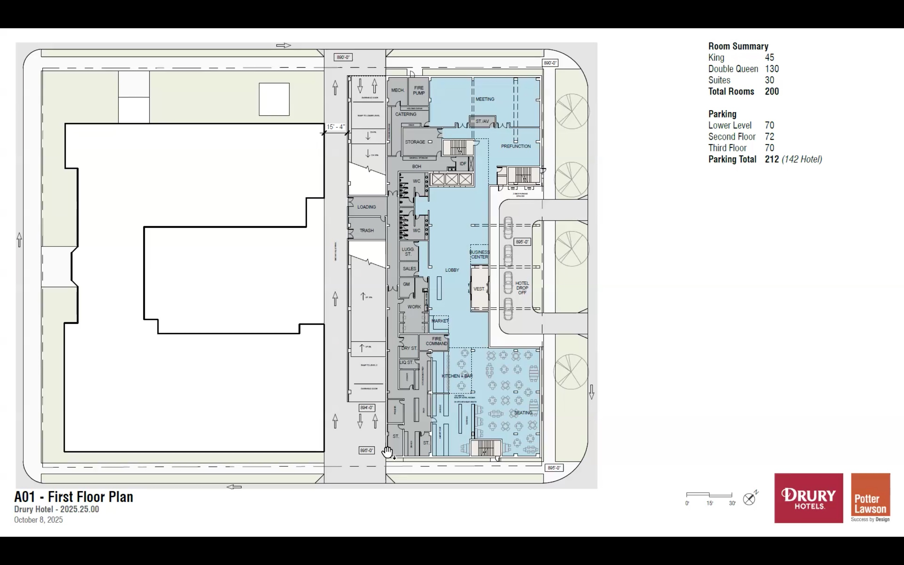
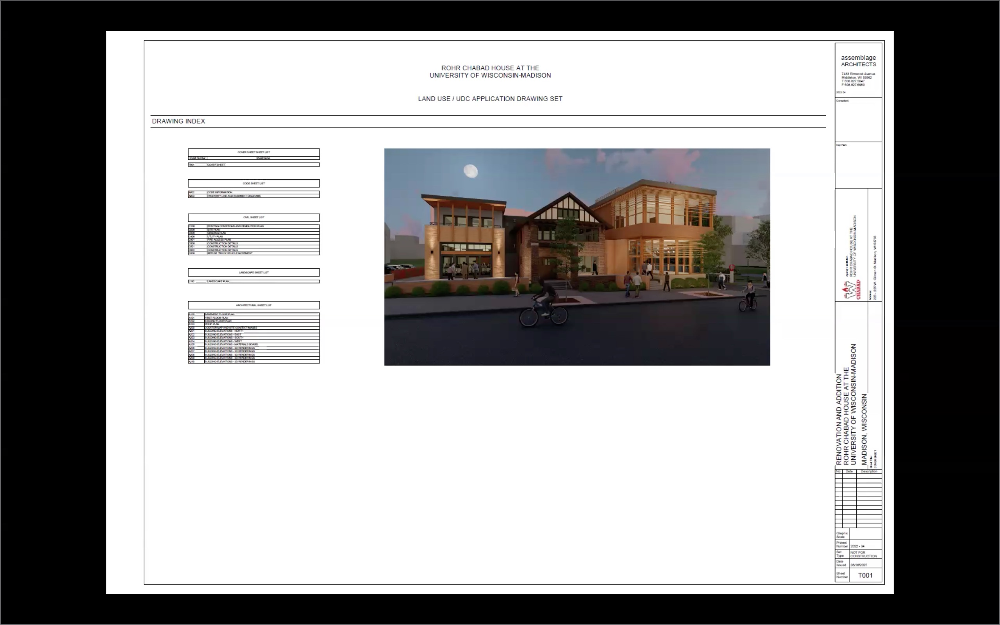

Urban Design Commission
Meeting Summaries
2025-12-03: The Urban Design Commission’s December 3rd meeting featured two major developments: “Central at the Forge,” a new mixed-use building at 2150 Commercial Avenue and 2231-2235 Myrtle Street, and a new 16-unit multi-family development at 203 North Blount Street. The UDC granted initial approval for Central at the Forge with conditions related to landscaping and design elements, while recommending the Blount Street project for approval by the Plan Commission after a brief discussion.
2025-11-19: The Urban Design Commission’s November 19th meeting featured two major developments: a new mixed-use building at 425 North Frances Street and 450 West Gilman Street, and a residential complex at 124 East Gorham Street. Both projects received recommendations for approval by the Plan Commission, with conditions related to design elements and landscaping.
2025-11-06: The Urban Design Commission’s November 6th meeting was brief, approving a new warehouse building at 4846 Tradewinds Parkway after a quick consent agenda item for a public building at 801 South Whitney Way. The warehouse design featured color banding to break up the massing, and landscaping conditions were added before final approval.
2025-10-22: The Urban Design Commission’s October 22nd meeting included approvals for minor alterations to the Hilton Tempo & Homewood Suites at 929 East Washington Avenue, signage for Re Mixers Inc. at 1802-1902 Wright Street, and recommendations for a multi-family residence at 139 West Wilson Street and a residential complex at 511-515 West Dayton Street. The meeting concluded with a discussion on UDC’s purview and evaluation criteria.
2025-10-08: The Urban Design Commission’s October 8th meeting featured approvals for a mixed-use redevelopment at East Washington Avenue and Ridgeway Avenue, a mixed-use development at East Washington Avenue and Fair Oaks Avenue, and the Dane County Sustainability Campus. Informational presentations were given on the Drury Hotel proposal, U-Haul U-Box facility, and the revived LEO at Pumpkin Hollow residential complex.
2025-09-17: The Urban Design Commission held a contentious five-hour meeting where TruStage’s request for “No Trespassing” signage was denied, while the Rohr Chabad House addition was approved with conditions. Two major developments were presented for information: a 12-story Madison Saxony Apartments project and a 230-unit mixed-use development on Odana Road, both drawing criticism for design elements. The meeting ended abruptly with a heated dispute between commissioners over speaking rights.
2025-09-03: The Urban Design Commission’s September 3rd meeting featured approvals for signage at 2102 Fordem Avenue and 2101 Atwood Avenue, as well as a new mixed-use building at 425 North Frances Street and 450 West Gilman Street. The commission also heard informational presentations on a residential complex at 124 East Gorham Street and a new warehouse building at 4846 Tradewinds Parkway.
2025-08-13: The Urban Design Commission’s August 13th meeting featured technical difficulties and leadership changes, but managed to grant initial approval to a mixed-use development at East Washington Avenue and held an informational hearing on affordable housing for the old Oscar Meyer site.
2025-07-30: The Urban Design Commission held an unusually brief July 30th meeting due to quorum issues, managing only to pass one consent agenda item and hear a presentation on a mixed-use development at East Washington Avenue and Fair Oaks before losing quorum at 5pm. The developers presented updates including additional townhouse units and building improvements, but the item was ultimately referred to the August 13th meeting without action.
2025-07-16: The Urban Design Commission convened to review signage proposals for the Rosen Nissan dealership and the Eastmorland Community Center and Housing development. The commission approved the signage updates for Rosen Nissan with modifications, particularly concerning the height of the brand identification sign. The Eastmorland project received unanimous approval, with commissioners praising the thoughtful design and community focus, although some concerns were raised about specific material choices.
2025-06-25: The Urban Design Commission held a focused meeting to review signage plans for the residential development at 655-667 S Whitney Way, ultimately denying one component of the proposal due to size restrictions. The commission approved all other signage elements, including wall-mounted and directional signs, but rejected the oversized projecting sign as it exceeded city code limits.
2025-05-28: A lengthy May 28th meeting, approving initial plans for a 246-unit University Avenue development with conditions, denying a controversial facade painting request on Gilman Street, and approving the new Dane County Sustainability Campus. Commissioner Graham announced his resignation.
2025-05-07: A brief meeting focused on design updates to a mixed-use building at 702 East Washington Avenue. JLA Architects presented modifications including window changes, updated balconies, and a secured parking deck, which the Commission unanimously approved. The meeting was hampered by technical difficulties, and concluded with discussion about handling critical public emails.
2025-03-05: Developments at 3361-3375 East Washington Avenue and 501 E Washington Avenue were presented. Commissioners voiced concerns over the designs, particularly regarding the transition from commercial to residential areas and the impact on the surrounding historic district. The commission requested further consideration of landscaping, accessibility, and the overall aesthetic of the buildings.
2025-02-19: A new office-warehouse building was proposed for 5001 Femrite Drive, with the commission expressing concerns over the design’s lack of texture and harmony with the surrounding area. The commission also reviewed plans for a 7 Brew coffee shop on Lien Road, where they raised issues regarding the drive-through design, accessibility, and the overall aesthetic. The commission ultimately approved the initial design for both projects but requested further revisions.
Meeting Details
December 3, 2025
By Tori Cooper
Kicking off their December 3rd meeting, two items were referred to the Urban Design Commission’s December 17th meeting:
Legistar 90072: a New Hotel in the Downtown Core (DC) to be located at 33 West Johnson Street (formerly 200 Wisconsin Avenue) in District 4.
Legistar 90325: proposed Residential Building Complex for 3205 Stevens Street in District 5.
Additionally, three items were given final approval after being placed on the evening’s consent agenda:
Legistar 90605: Signage Variance at 4725 Tradewinds Parkway in Urban Design District (UDD) 1, located in District 16.
Legistar 90723: Signage Exception for 307 East Wilson Street in District 4.
Central at the Forge and the Oscar Meyer Special Plan
Moving into their evaluations, the Urban Design Commission first looked at Legistar 88916: a New Mixed-Use Building in Urban Design District (UDD) 4, which would be located at 2150 Commercial Avenue and 2231-2235 Myrtle Street in District 12. The UDC was an approving body for the returning item and Commissioner Asad recused himself due to his involvement with the project.

The applicant team began by reintroducing their “Central at the Forge” proposal, reminding the Commission the site is just over 4 acres and aims to provide 241 residential units over a total of 5 levels, including parking and on-site amenities. Several adjustments had been made since their last UDC presentation—namely, creating the illusion of two separate buildings through the use of an eleven foot setback, as well as framing the north and south ends with commercial spaces.

To further break up the facade, the architects have used brown tones in the middle vertical sections, as well as grey cornering on the lower two stories. Based on feedback from their informational presentation, the courtyard helped in successfully breaking up such a long building; however, the applicant team wanted to take the design one step further, as they understood previous concerns shared by the UDC. There was also action taken towards revising the roofline to highlight the verticality of the development, as well as work done to adjust for a further recess on the eastern side of the proposed building.

Daniel Siebel spoke in opposition as one of the last remaining owners of parcels in the Oscar Meyer junction, arguing the proposed building creates a physical and visual barrier to the remainder of the site. Siebel had hoped the site would be developed in a way that was more coherent and cohesive to the area, rather than a five-story wall that essentially hides the 19 acres of area behind it.
Before jumping into discussion, Staff noted the presentation before the Commission did not match the submission that was sent out with agenda materials. As such, Staff did not have an opportunity to review and could not confidently advise on the item. There was then some brief discussion about the soil condition, at which point the applicant team stated they have been consulting environmentalists, as well as the Wisconsin Department of Natural Resources. Currently, they are in the process of determining what sort of mitigation may need to be done, as well as what decontamination measures will need to be taken due to pollution left from the former Oscar Meyer plant.
Commissioner Klehr asked about the need for the development to be a single building, rather than two or three independent structures. At the same time, she threw in a question about how this will impact traffic along Packers Avenue and Commercial Avenue—especially with the number of pedestrians they hope to welcome with their community spaces. The applicant responded they tried very hard to use different cornices, colors, and materials to address the single building’s scale. Their modern design specifically uses masonry as a call-back to the industrial history of the site, as well as comply with the Oscar Meyer Site Plan that holds over the entire junction of the former factory site.

Commissioner Bernau then called on Siebel again, asking what the concerns were with the massing and layout, to which Siebel responded that changing the colors and adding set-backs does not change the fact the parking area will face all the other development in the area, nor how it blocks the rest of the neighborhood behind the proposed building. The applicant team was quick to jump in and state how their Vice President of Development, David Werner, had attempted to contact Siebel on October 14th, 2025 to share the renderings in an attempt to get feedback and hear community concerns. The applicant team argued they have tried very hard to adhere to the site plans for the Oscar Meyer area, but stated this is the first time they have heard the actual concerns being voiced by Siebel tonight. Alder Mayer chimed in to voice his sympathy for Siebel and not wanting developments to face the parking garage; however, he noted the area is zoned for up to eight stories and the site plan intends for high-density use.
After further discussion on the overall massing and length of the building, Commissioner Mbilinyi suggested breaking up the building into two at the courtyard space. If the developer insists on a connection, she further suggested bridges and lots of windows to bring in more light and keep the spirit of the courtyard alive.
Commissioner McLean jumped in right before the public hearing closed to ask why the lower sectioning of the gray masonry went up to the third row of window sills, comparing the look to when someone has their pants pulled up too high. To him, it would have made more sense to stop at the same level as the balconies, rather than bringing it all the way up. The architect with the development team thanked Commissioner McLean for his input, but noted they had studied two different heights. McLean’s suggestion had given the windows a floating illusion, which they ultimately felt diminished the overall appearance—hence their decision to bring the gray masonry up to the bottom of the window sills.
Commissioner Bernau then moved the UDC into their deliberation by shifting the conversation to the landscaping, sharing concerns over the amount of turfgrass lawn and exposed bark mulch being used. According to Bernau, turfgrass would not be appropriate for the site due to maintenance requirements and the location. As such, he suggested more attention to detail and design, recommending a high volume of perennials and plantings to further activate the space. The applicant team attempted to jump in and voice their agreement, but they were quickly muted by Commissioner Bernau, who stated the public hearing had been closed. Due to his concerns, Commissioner Bernau stated he would like to see conditions set on the plantings if this were to pass.
Continuing his train of thought, Commissioner Bernau noted how torn he was over the length of the building; however, he noted how several other locations in Madison fall into the same category, and it is “just how areas sometimes develop.” While he struggled with the fact there are no natural crossings between Commercial Avenue and Coolidge Street—with most of it being fenced off—he was ultimately excited over how the space had been designed with pedestrians in mind. Commissioner Hellrood seconded the Chair’s thoughts regarding the use of perennials in the planting plan, but decided not to add more thoughts, as he believed Commissioner Bernau had already done a good job of explaining the need to activate the space more.
Commissioner Klehr, stating she understood they had already discussed the building size enough, briefly voiced the design could be helped by rotating the building. She then moved on to look at how pedestrians would access the spaces designed for them, as well as who those spaces would be open to. For her, there were a number of questions about usability and who exactly the target group is; furthermore, she recognized the site as a new hub in a new neighborhood. That being said, she did not think the proposal properly acknowledged the history of the site and was unsure of how it fit into the overall future plans for the area.
Alder Mayer asked special guest Alder Glenn if she was aware of any pedestrian access bridges included in the Oscar Meyer Special Area Plan. While Alder Glenn was not aware of a bridge, she noted there is a major push for pedestrian spaces and a more accessible area; therefore, she would expect more walkways or crosswalks to be added as developments move forward. The Commission and Staff discussed plans for the area, access streets, and the overall layout in an attempt to identify how the neighborhood is expected to change with regard to both pedestrians and vehicles. While they note several separations and major roadways that essentially block pedestrian access, there are several through streets that offer safe crossing points, which would allow the community to use the amenities JLA is offering with their plan.
Commissioner McLean noted how the community space, which is meant to break up the building, looks as if it should be an easy pass through for pedestrians and cyclists, when it reality the building takes up the entire area between the surrounding streets, While he did not elaborate, there were tones of concerns for those trying to navigate the area who may not be familiar with the building itself.

After further discussion regarding wanting to evaluate jointing, massing, and materials, the Urban Design Commission reviewed what they would like to see next if they granted initial approval on the item tonight (as requested by the applicant team). It was determined the applicant team would be required to come before the UDC once again for final approval, with updates to the planting, garage structure’s design and integration, additional details on the white fiber panels’ size, jointing, and texture, as well as response for whether or not the developer can offer additional pedestrian access pathways or a bridge. Commissioner Bernau highlighted Commissioner Klehr’s proposal to rotate the design and Commissioner Mbilinyi’s suggestion of a connecting sky bridge or glassed walkway in the closing remarks.
Following their discussion, Commissioner McLean decided to move to have the item referred to a later meeting in order to get more information from the developer before moving forward with the plan. Staff noted they also heard concerns over louvers and HVAC locations, adding the item to the growing list of topics for JLA’s team to focus on next time. Following suit, Commissioner McLean also requested lighting be added to the list. Because of the building’s zoning district (it was pro-actively rezoned), this building will not need conditional use approval from Plan Commission and so UDC is the approving authority.
New 16-Unit Multi-Family Development on North Blount Street
The Urban Design Commission turned their attention to Legistar 89581, a Major Alteration to an Existing Planned Development (PD) located at 203 North Blount Street in District 6. Despite almost making it to the consent agenda, Alder Mayer had requested a friendly amendment to put the item back before the UDC, who was acting as an advisory body to the Plan Commission. The last time the item was before the UDC was for the applicant team’s informational presentation.
As a reminder, the development was originally approved in 2017 for a new eight-unit building; however, COVID interference led to part of the approved project not being completed. Seizing their opportunity, the applicant team is now requesting to increase the building size from two stories to three in order to add a garden level and raise the number of units from eight double-beds to 16 single-beds.

Based on previous feedback, the roofline has been extended to cover the patio spaces in order to better connect them to the building, as well as provide more protection for use during inclement weather. The west elevation facing the Blount and Dayton corner has also had additional breaks in the massing added, with a change to a garden sage siding from the previously approved red.

Commissioner McLean started the conversation by questioning why the patios were designed with the Sand Dunes tan rather than keeping in line with the Garden Sage green. The design team stated they had hoped to “give it a little visual difference” while tying it into the area a bit better. Commissioner Mbilinyi was curious about the vertical triangles that were used in the roofline—specifically what might be housed in the interior spaces they create. The design team did not give an exact answer, but it is understood that the bay areas which come out to meet the triangle above the entry door provide additional living room space to the intended residents, and the triangles above the third level patios provide extra gable space.
Alder Mayer mentioned he, as the alderperson for the Tenney-Lapham area, had only learned of the development the week prior to tonight’s meeting and requested more information. While Alder Mayer “scrambled to get things together,” he was unfortunately unable to get a neighborhood meeting set up ahead of the proposal coming before the UDC. Alder Mayer stated the developers have done everything right, but respectfully noted a motion to refer the item to the December 17th meeting would be due to a novice alderperson. As such, the Plan Commission meeting would get pushed to January if the UDC chose to defer the item, which seemed to be overwhelmingly preferred by the Commissioners with so many changes having been made.
While Commissioner Klehr noted she felt the building color did not do it any favors compared to the older renderings, she jokingly questioned “who cares what I think?” While Commissioners Bernau and Mbilinyi were quick to say they do, Commissioner Klehr further joked “oh, you’re sweet. The rest of the City doesn’t care!” [ed. We at Madison Coucilytics would like to take a moment to acknowledge the work of the individuals serving on the Urban Design Commission and note we, as well as many other Madisonians, do care and thank the Commissioners for their service.]
Commissioner Bernau agreed with Commissioner Klehr’s remarks regarding the color; however, he mentioned the balconies previously floating and their still maintaining an “antiquated college development” style—which he was glad to see updated with the coverings. Alder Mayer further agreed, stating the triangle roofing style is not as appealing as previous designs, but overall was more coherent with the neighborhood.
In the end, Commissioner Klehr made a motion to recommend the item for approval by the Plan Commission. While she hesitated to not add language regarding neighborhood input, it ultimately was not included in the motion.
Proposal for a New Mixed-Use Building at 999 South Park Street
For their final item of the night, the UDC heard an informational presentation on Legistar 90917 for a new mixed-use building at 999 South Park Street. The parcel resides in Urban Design District (UDD) 7 within District 13. The Commission will be an approving body moving forward. Commissioner Bernau recused due to involvement and Commissioner McLean stepped in to chair the item.

The applicant team started by highlighting how the proposed development would provide access to bike and walking paths, as well as bus routes in an established neighborhood. Currently, the development is set to reside about 200 feet away from a future BRT stop. The developer stated their design was inspired by views of Lake Monona (or in this case, Monona Bay), Capitol views, and the capital arch—which is echoed by the design with a gateway aspect. They further noted how the Park Street corridor has seen tremendous growth, where Madison “seems to be growing from its core.” As such, the applicant team had already canvassed the neighborhood to assess what commercial tenants they would like to see using the space.

Development asked themselves how they could promote more community, belonging, and togetherness. This led to their decision to toss out the smaller private patio spaces and include larger outdoor communal areas, as well as some hidden garden spaces available only to building residents. While they are still having out the details, they are hopeful to make this part of their final design submission and have it heavily planted.

The applicants mentioned how they tried breaking the massing up from one long 60-foot-wide space into two smaller 30-foot-wide spaces that better align with the single-family homes in other parts of the neighborhood. The two barrel roofs are meant to give more personality, while acting as a mechanical penthouse. The masonry along the bottom is meant to mimic the language of the area, keeping in line with nearby historic buildings and those with a historic feel along Park Street.
One public speaker was registered in opposition. While Carrie Rotherberg supports developing the site for her community, there was concern over the disconnect between the building design and the context of the neighborhood. Rotherberg and her fellow community members had only just learned the details of the building plans and will be meeting with the design team tomorrow (December 4th). She argued nearby neighbors will lose the privacy of their yards and their afternoon light if the building were to be erected as-is. There was also large concern over the additional traffic the building could bring in, in conjunction with the no-left turn onto an arterial roadway proposed for the BRT’s installation next year. Rotherberg mentioned a backlog of traffic and multiple left turns that need to be made in order to exit the neighborhood between Park Street and Lake Monona.
Rotherberg further questions the previous TSS zoning and how the TOD overlay has impacted the neighborhood. With the TOD overlay, the other side of the street was zoned to mixed-use commercial—not the side the proposed site resides on.

Following the public comment, Commissioner Asad immediately jumped to the roofing material, which the design team mentioned they are hoping to source from a steel company in Texas. Commissioner Asad confirmed the windows would essentially be punched through the metal rather than being framed, with the metal acting as a rain shield. Based on the neighborhood feedback, Commissioner Asad suggested bringing down the roofline. Currently, it looks to be about a full story of a story and a half. If studies can be done and determine there is excess space, lowering the curvature would fit better with the neighborhood context and not loom over the single-family homes near as much as the current design. This could potentially alleviate some of the neighborhood’s concerns while keeping to the desired building style. Overall, Commissioner Asad thought it was an interesting concept that was not necessarily good or bad—it just needs to be executed properly. Alder Mayer also called the project weird, but said “I use weird in a good way,” in that he enjoyed seeing something different despite not yet knowing if he liked it.
Alder Mayer asked Rotherberg if she had a formal organized neighborhood association for the area, She responded yes, but it is “dysfunctional on many grounds.” According to Rotherberg, when they have worked in smaller groups, they have had success in guiding projects such as the nearby VWF. She additionally noted tonight’s letter to the UDC was not written on behalf of the Bay Creek Neighborhood Association—this was a concise group of experienced association members with a shared view. She clarified they are not completely opposed to the development; they simply think it can be improved and in a way that will fit with the area, while also better serving the community.
Commissioner McLean shifted to mention including more articulation in the design once the item comes back for approval, specifically something to add to the currently blank facade. Rotherberg asked to speak again, mentioning neighbors questioned the impacts on lighting with the blank walls—specifically how the reflections will dampen or amplify the current brightness levels. She then added a note on parking, asking if it could be sacrificed at all, as the neighborhood is hesitant to host the additional traffic. The developers acknowledged the City “entering new territory” by moving towards eliminating parking minimums; however, they noted the difficulty with leasing units without a dedicated parking option. While they will be meeting zoning codes, they plan to only allot roughly 60% parking availability rather than having a one-to-one unit-to-stall ratio.
An unregistered public speaker named Janelle jumped in to ask “is it not possible to put in underground parking?” With this suggestion, there would be a full story reduction in housing. As such, the applicant team stated this would impact their affordability goals. They also noted the building footprint is so large it would be cost prohibitive to the overall project. Additionally, there are environmental concerns over contamination from previous developments, which would have a large impact on their ability to safely install underground parking. The unregistered public speaker was less than thrilled with the response, challenging the developers by asking if they knew for sure if there was contamination on the site.
Admittedly, they did not know with 100% certainty; however, Phase I testing showed contamination to be more likely than not. Their environmental team has suggested a Phase II report to gather empirical data on whether previous gas stations that utilized the site from roughly the 1920s through the 1940s had had the impact they expect. The Commission agreed, noting previous use—especially from that time period for gasoline tanks—would likely impact what can and cannot be done. Commissioner McLean specifically stated that sometimes it is best to leave things as they are, rather than stirring up old sites and causing further issues. With that, the Urban Design Commission wrapped up the informational presentation and drew their evening to a close.
November 19, 2025
By Tori Cooper
Kicking off the November 19th Urban Design Commission meeting, two items submitted by IA, LLP. for signage exceptions were moved to the evening’s consent agenda. Both locations sit in District 17–specifically at 2104 City View Drive, which is included on Legistar 90603, and 2130 City View Drive, Legistar 90604. Signage is being requested on an elevation that would not normally allow for posting; however, the proposed units would be smaller than the zoning maximum and a need had been determined by Staff for building identification.
Continued Discussion on New Downtown Apartments for Students
The first of two items up for discussion this evening was Legistar 89583. This meeting was a follow-up to their September 17th informational presentation regarding a new mixed-use building in DC Zoning within District 2, located at 425 North Frances Street and 450 West Gilman Street. The Urban Design Commission acted as an advisory body to the Plan Commission on the item.
The applicant team reminded UDC the proposal was already in front of the Landmarks Commission, where they found the massing was acceptable in relation to the Grimm Book Bindery historic building and was suggested for approval. Since their last presentation, they have moved the commercial space from Francis to Gilman Street to enhance public access, community engagement, and align with current street design.

Vehicular access will be shared between garbage pick-up and parking space. The ramp is planned to include a parking sign to make it apparent to guests there is a lot available for public use. Based on feedback, the applicant team has opted to go with a more transparent garage door in order to activate the space more and provide more transparency when viewing the building from the outside.

The building has been divided into a two-tower massing with a third lower, two story section at the front, which not only breaks the building up to give it the feel of multiple buildings instead of one large, ominous unit, but also highlights the “verticality” of the design. The pallet was updated slightly to consist mainly of contemporary style, textured metal panels. Due to the angularity of the North Francis Street grid, previous designs were less consistent—the updated design has been cleaned up to align with the strong street frontage.

The applicant team also took the time to highlight how additional landscaping has been included on the roof and the pool has been stepped down in order to not overshadow the Grimm Book Bindery next door without losing some of the amenities the developer aims to provide future residents.

Commissioner Bernau jumped into the conversation to ask about building materials and their placement. The applicant team noted brass accents and Casablanca greytoned brick is specifically planned for the first two floors of the North Francis Street side—reserving the accents for the lower jut-out of the building only. There was further questioning from Commissioner Klehr on the horizontal alignments in the rendering and how they play into the color scheme. Concerning the rendering, it was determined the actual design was in proper alignment; however, the rendering did not properly show the color depth in relation to the sections’ alignment. While it was ultimately a non-issue, it is worth noting the UDC’s concern over such matters.
With regard to the pool, Commissioner Klehr questioned the materials being used for the pool and if they would stand the test of time. The developers assured the Commission the pool was safe, being composed of an acrylic they have used on several prior projects. The material will not yellow over time and maintain its clarity for years to come. They also discussed the walkway space between the pool and the rooftop edge. This is required by the Health Department for safety reasons, and it was clarified this will not be an infinity pool—though they hope to give it that feel. Commissioner Mblinyi noted she was excited to see the building once it is built; however, further discussion in conjunction with comments by Commissioner Bernau led to the realization the pool will be minimally visible from the street.
Commissioner McLean questioned the street level lighting next. The design team stated they were aiming for interior fixtures that will provide a vibrant building glow, which will spill out onto the street through numerous windows. This is meant to activate the space even after dark, as the interior glow will raw attention to the space while duality providing enough lighting for pedestrians outside. It was then further clarified the interior light fixtures would not ne facing out onto the street or pointed in any way—instead the developer is using specific angles and lighting styles that will naturally illuminate the streetscape with their light spill.

Commissioner Bernau asked why work the applicant team had done or was in the process of doing with the Forestry department. The developers stated they had been working with Urban Forestry to determine which trees were worth restoring and which should be replaced. Commissioner Bernau was especially concerned with an Ash tree located along North Francis Street, which previous images showed it may be in poor health. Both the UDC and the applicant team were in agreement there was not use trying to save a tree that would not ultimately benefit the area, but ultimately a decision would be made after further conversation with Forestry has been had. If replacement trees are needed, the team hopes to have a more hardy variety that will be less prone to disease and is more vibrant.
In the end, the commission concluded most of their remaining commentary fell to items the City would be responsible for (namely street lamps and streetscaping with the trees). As such, the item was recommended for approval by Plan Commission with the conditions of modifying the garage door to add glazing and to taper the rooftop section of the pool back to the main building facade, so it communicates more effectively with its neighboring historic building.
New Construction at 124 East Gorham Street
The second and final item of the evening focused on Legistar 90077, a new residential building complex in the Mansion Hill Historic District in District 2, to be located at 124 East Gorham Street. The Urban Design Commission acted as an advisory body to the Plan Commission on this item, following its August 18th certificate of approval from the Landmarks Commission.

After receiving unanimous approval from the Landmark’s commission, the applicant team highlighted their work on the building massing and keeping an appropriate scale with their new building. They stated their goal was to keep proportions and size in rhythm with the surrounding area so it does not look out of place. In that same vein, the planned materials and colors are meant to compliment older buildings and pay home age to the historical landmarks nearby. That being said, their goal is not to replicate older architecture, but update the design enough to make the building have that new, finished appearance without standing out.

Commissioner McLean was a bit concerned with the size of the porch along Gorham Street—especially the stairs that extend directly to the sidewalk. The applicant team notes there is limited space and, while they have played with moving the building back and forth within the space, they ultimately found this to be the best design. The developers also noted an accessible side ramp, which utilized a sidewalk that cuts between their complex and the building directly to their left. Commissioner McLean admitted he may be asking for miracles, but requested the development team look into their design further in order to better use the space, rather than fill it with stairs and deck space.
Commissioner Bernau questioned the reasoning behind the roof pitch line. The designers said there were multiple factors, including code requirements and space needed to make their upstairs unit a fully livable space without making the complex appear even more massive by raising the roof. Moving onto landscaping, Commissioner Bernau for clarification on the differences between the renderings and the submitted planted designs. While the application did not include small-scale trees and shrubs, they were included in the renderings for tonight’s presentation. He believed the space did not look as good without them and wanted to know if they would ultimately be included or if they were simply added to the renderings for aesthetics. The design team noted they do in fact want to include the plantings shows, as they believe it adds depth and scaling to the space; however, they were still working out details of which specific plants should be put in and what will work with the space long-term. As such, they are not formally included, but should be with future updates.


Commissioner Mbilinyi, with clarifying help from Commissioner Klehr, suggested making a L-shaped stair to preserve space and activate the area more. Commissioner Klehr further stated concern with how close the railing would be to the sidewalk. She shared her thoughts on the potential for pedestrians getting caught as they navigate the sidewalk—which would be especially dangerous if it was someone jogging or riding a scooter. Commissioner McLean then requested additional details on how far out the soffits are expected to stick out with the current design. The developer said it is about 18”, in part because of zoning requirements and also due to trying to keep the proportions in line with the overall design.

After minimal discussion between commission members, the item was recommended for approval by the Plan Commission, with conditions to review the stairway and landing, as well as increase the eve overhang at the front of the building and incorporate more plantings into the courtyard design.
November 6, 2025
By Tori Cooper
Following a series of lengthy meetings, the Urban Design Commission kept it short and sweet for their November 6th assembly. Moving quickly, agenda item three was immediately approved under the evening’s consent agenda—Legistar 90175: a public building for the City of Madison Water Utility at 801 South Whitney Way in District 11.
Tradewinds Flex Building

The one and only item left for discussion was Legistar 90324: a new building set to be constructed at 4846 Tradewinds Parkway in Urban Design District (UDD) 1 within District 16. This will be a new warehouse project just east of the belt line next to the Sleep Inn & Suites Madison - Monona. Currently, the parking lot is being used to store Amazon vehicles. Aside from that, the applicant team notes it is mostly a greenfield site.
Construction is currently planned for Spring 2026; however, the design has been purposely left as an open concept since there are currently no tenants set to lease the space. The building is primarily cement-based, but the development team has opted to add additional pops of color by painting bands across the upper half of the side, as well as having broken up the massing by painting the lower half a darker shade of gray, while the top will be a lighter gray tone.


Commissioner Bernau asked about building constraints with regard to the neighboring highway and the site’s landscaping potential. The applicant team noted a drainage easement along the south, which limits planting options. To the north, there is driveway interference, which has provided additional obstacles with planting. That being said, they are working to leave existing grass undisturbed as much as possible—only regrading areas where the warehouse will be set. Not only would this allow them to ‘reuse’ the existing landscaping in order to reallocate some of the budget to add additional shrubs and trees, but it also aids in erosion control with what currently exists naturally. According to Commissioner Bernau, the section to the east—which faces the hotel—could use more landscaping. He specifically suggested tall, narrow evergreens. An additional note was then made about the grading near the parking section. Due to how low the ground sets, he believed they could add some taller plantings and fuller trees. Making one final comment on what he assumed was a typo, Commissioner Bernau clarified bark mulch should be used throughout (whereas one section was noted to use rock, rather than wood-based filler).

During a discussion about rooftop mechanicals, Commissioner McLean asked where units would be located. The developers stated they struggled to anticipate where the exact location will be, since it could depend on the tenants’ needs; however, they expect rooftop units to be located somewhat centrally to each warehouse section.
Commissioner Asad critiqued the entries, stating the overall color design and sectioning was well balanced; however, the doors deemed much more haphazardly thrown in. That being said, he felt the utilitarian style in conjunction with the intended use did not warrant a full discussion. As such, a movement was made and the item was approved with conditions regarding landscaping.
October 22, 2025
By Tori Cooper
Yet another discussion-heavy meeting was held Wednesday evening, when the Urban Design Commission met to discuss several returning items, as well as hear from City Staff about changes and reminders regarding the UDC’s objectives and purview. To start things off, both of the items proposed by the Madison Metropolitan School District were moved to the consent agenda for unanimous approval.
Consent Agenda:
Legistar 88480: public building for MMSD Gompers Elementary and Black Hawk Middle Schools, located at 1402 Wyoming Way in District 18.
Legistar 88482: public building for MMSD Sherman Middle and Malcolm Shabazz High Schools, located at 1601 North Sherman Avenue in District 12.

Alterations to the Hilton Tempo & Homewood Suites Proposal
Moving to the first item of the remaining agenda, the Commission reviewed Legistar 90073, which seeks approval for alterations to a previously approved development in Urban Design District 8, located at 929 East Washington Avenue in District 6. Alterations include changing brick and adding some accent masonry, as well as replacing steel with precast concrete. The skin will now be a pre-fabricated facade. The depth and locations of windows have not changed—it is just the materials.
The new brick does have a texture and the development team plans to use a stacking method in order to give it a more modern look. The precast steel still has a smooth, almost shiny finish. The decision to move to the “knock-off finish” is in part due to a twenty five year warranty that guarantees no sun fading, paint chipping, or issues with the overall look, all while still being within budget. Another benefit of the precast faux steel is that it does not require maintenance or rust—ensuring the building’s appearance will remain in quality standing for the next few decades.

Other minor changes include adjustments to canopies and trim, in order to give the building a more refined, throughout look. Additionally, a small rooftop trellis has been added to offer cover from the weather while occupants utilize the rooftop amenities. Despite the changes, most of the planting pallet has not been altered and the applicant team has chosen to keep a myriad of outdoor amenities. These include a pool, yard game area, and gathering space on the planted roof, as well as a lower patio with grills, tables, and additional open green space.

Commissioner McLean asked about elevations; however, the applicant team instead focused on the parking ramp which sits internal to the block. They spoke to future plans to connect other buildings, which would absorb the parking ramp further, while still making it available for use by visitors to other businesses in the area. Getting back to Commissioner McLean’s question, the applicant team pointed the UDC to the appendix, which offered a rough overview of the site’s elevations, but was not guaranteed to be entirely accurate due to how the parking ramp is situated.
With little further comment, the application received final approval from the Commission.
Signage Review for Re Mixers Inc.
Up next was Legistar 89896: major amendment to an approved comprehensive design review for signage (CDR) at 1802-1902 Wright Street in District 12. While the original application was for ground signage, some signs existed prior to the CDR amendment. This is, in part, why the specific amendment is being requested, as the design team seeks to match existing signage.
As noted in the staff report, there is concern over harmony between the signs, as well as necessity due to the number of established ground signs; however, if the UDC does believe another sign is warranted, they must clearly state their findings as to why the CDR should be approved. Commissioner McLean got clarification on Staff’s concerns being the materials and placement. Staff confirmed, adding the design and color scheme is also a factor. The UDC must decide if the design is consistent with the existing installments.

Commissioner Bernau questioned if the new signage should remain the same datum and zone height in order to match the existing signage. The team from Sign Art clarified their design allows for individual mounted letters which, according to the property manager, can vary in color as long as they are individually mountable. Allie Novitske, with the design team, argued they have met the criteria outlined by the UDC and met the City’s zoning codes since they are following the same height bands—maintaining what they view as a consistent design. Staff Vaughn clarified, stating between the difference in building heights, signs’ zoned heights when there are multiple fixtures on a single development, and different sizing, things become inconsistent. To Commissioner Bernau’s point, sign consistency should not just be with the location-specific signs, but the neighboring commercial spaces’ signage as well. Commissioner Bernau referenced the red signs being used at different heights on different species within the building. While the proposed sign fits the zoning by itself, it does not fit with the other business’ fixtures. As such, he believes the design team should be staying within the previously approved section.

Commissioner Klehr, admitting to possibly being obtuse, asked if her understanding was correct that signs could not be installed on the brick, but can be adhered to the previously approved EIFS (exterior insulation and finishing systems) area. This was confirmed, with Sign Art stating this was another reason the decided to propose a backing board. This response led Commissioner McLean to ask about the backer board itself and whether or not it would be directly applied to the building. Staff Vaughn further asked if her understanding was correct in that the darker section of the design was being considered the backer board for the independently mounted lettering. Novitske confirmed both Commissioner McLean’s and Staff Vaughn’s understanding, again noting this was because of the letters being independent units.
Alder Mayer critiqued the Re Mixers Inc. logo, wondering why Sign Art was changing the design to match the building by using a dark brown backer board rather than black. Staff Vaughn quickly jumped in to say the logo was not being modified, only the color in order to match the building; however, Novitske contradicted the statement by stating other locations did not use a backing, so they were in fact modifying the logo to match the CDR requirements.
Staff Vaugh added the CDR amendment at play this evening was modified in 2018, further stating if the ground signs had been mounted properly a CDR would not be needed—which is part of the concerns listed within the staff report. Novitske chimed in to say the option had been explored, but ultimately was decided against as a lit ground sign would cost thousands more than what they are proposing.
This continued to confuse Commissioner Klehr, as other company logos appeared to be round and not contain letters (according to Google Earth, at least). While not within the UDC’s purview, it added to the Commission’s confusion as to what the exact request being made was and why Sign Art needed an amendment to an already approved application.
Moving into deliberation, Commissioner McLean noted liking the lower sign than what is allowed on the main facades should they approve installments on the building corners. He believed higher signage on the corners looked like they would be for the entire building, rather than just the corner units’ tenants. Commissioner McLean further stated he did not understand why a backer was not being used, then covered with a logo—which would not need an amendment. Similarly, Commissioner Klehr and Alder Mayer both questioned the need for the sign, with Commissioner Klehr saying she would imagine the other tenants would not be happy about another sign overshadowing their business’. This was in stark contrast to Commissioner Asad’s thinking, where he believed the sign should be allowed to go over the entry. Upon closer review though, the entries to the corner businesses vary by building within the complex—with some being on the corner and others being off to the side. Due to this, Commissioner Asad rescinded his comment, stating the entry variances further complicated the issue.
With Commissioner Bernau stating the obvious that “this one isn’t easy,” the UDC ultimately approved the item with conditions of findings.
Multi-Family Residence at 139 West Wilson Street
Doug Pahl from Aro Eberle Architects was back before the UDC following their June informational presentation to review Legistar 88479: a new multi-family residential building in UMX Zoning, located at 139 West Wilson Street in District 4. One major change was widening the driveway by about twenty feet to allow service vehicles and delivery trucks to park along the side without blocking other vehicles, as well as provide additional space for pedestrians and cyclists navigating the space. Additionally, the flexible parking spaces for ridesharing have been relocated, which should allow the aforementioned vehicles to turn around more easily and safely.

According to Pahl, there have also been window modifications—which included removing one set towards the bottom in order to contextualize the datum with adjacent buildings and standardize the remaining windows’ spacing within the development, as well as bring down the cornice containing the green space mural. Another modification has been made to the proposal’s elevation, which allowed their team to bring down some of the paneling sections to be more consistent. Overall, Pahl favors the new massing in relation to how it is now “receiving its neighbor” and the buildings align.

Jonathan Cooper, from the Bassett Neighborhood Association, shared concerns over the inadequacy of the driveability within the area and no on-site parking. Their association is especially concerned over the additional traffic a three hundred and twenty unit building will generate, referencing food deliveries, Amazon drop-off, and cabs. Despite the driveway changes, larger UPS and Amazon trucks will be too tall to fit within the turnaround space and too long to fully turn—meaning traffic will begin backing up into an already heavily-used street. As such, their association asks the proposal be denied as they believe the area cannot support the additional residents.
Randall Alexander, with the development team, chimed in to share the average length of UPS and Amazon delivery trucks—stating they have allotted enough space within their paved area to adequately accommodate them. Alder Mayer then tanked the presenters, but asked if they had an estimate of the number of deliveries that might be made to a residential space of this size. Although the development team did not have an estimate, stating it was a “moving target;” however, they would expect the figures to be lower than the average since this is planned to be income-based housing. There was further discussion between Alder Mayer and the developer regarding moving trucks and furniture deliveries. Because these will be smaller units with lower income, the developers do not expect semis to be in the space at any point.
Moving to the design itself, Commissioner Asad asked about standardizing the top height and using more wood paneling along the backside. The developer chose not to add more wood to the non-street facing side as only the residents will see it and they did not feel it added anything to the overall design. Commissioner Asad disagreed, believing it would in fact add something extra for the residents, rather than being boring and monotonous. Regarding the top of the building, there are planned service compartments and rooftop mechanicals, which do not need an entire floor. In an attempt to cut costs, they decided to only include housing for the service space and mechanical units. The Commission deliberated over the building height, stating they would prefer some changes made to the datum in order to reduce the height to be more human-scale. Alder Mayer further stated he thinks it is a bold move to not include parking for residents. Although he does not own a car and has never owned one, he doubts the developers will find three hundred and twenty (or more) residents like him and is overall intrigued by the venture.

Commissioner Bernau believed the developer had done a good job all around—specifically mentioning the modifications made following the informational meeting and adequately justified their driveway changes. Although he was not sure about the code requirements, he though the project was showing a great deal of promise. There was further discussion surrounding your Capitol views; however, it was determined that falls outside of the Commission’s purview. As an advisory body, the UDC recommended approval by the Plan Commission with conditions, which can be satisfied administratively.
Mifflin Street Complex Proposal
The last application before UDC Wednesday evening was Legistar 90048: residential building complex slated for 511-515 West Dayton Street in District 4. Some may remember this site as the location where rowdy Mifflin Street Block-partiers flipped a car last year and the GoFundMe the followed. The applicant team noted the incident and stated their goal with the driveway is to make odds less likely to have a repeat incident. Additional measures to deter future party goers includes back yard fencing that will allow for twenty feet between each building. Neighboring land owners have been supportive of the proposal and are said to have liked the harmony the fence will bring by being placed almost equidistant between other residences.


The four new residences will be two stories with four rooms each. The current plan is to use two gray shades of vinyl siding with light stone and wood-patterned accents, plus some white trim. There are also plans for five bike spaces to be provided at the front of each deck, which is not noted in the renderings. Commissioner McLean asked about planar changes between the trim and siding, to which the developer stated it was a “straight material change.” Commissioner McLean asked if there was any way to add more texture and tone to the building, aside from the trim transitioning to the wood accents; however, the applicant team shared concern over the impact that would have to entryways and patio spaces due to the additional volume a material change would provide.

Kicking off UDC’s deliberation, Commissioner Bernau critiqued the “away ward balance of the planting design,” saying there could be something of more stature in place of their current sedge. Commissioner Hellrood agreed, further stating there could be additional structure balance within the corridor space.
Discussion was then transitioned by Commissioner McLean to focus on the windows. He tied in the material transitions, asking the applicant team if they could alter the spacing and materials to add depth. This led to the public discussion being reopened for a response by the developer. They responded their team could certainly look into it, noting one of the challenges would be the height of the windows and landlords being able to maintain them. The outdoor stairs lead to an attic space, which causes the windows to fall within an intermediate space. They still believed they could evaluate options that would help break up the massing and hopefully find some middle ground if they could not come up with a full compromise. With that, the Commission moved back into deliberation.

Latching on to windows and spacing, Commissioner Barnau sided with Commissioner McLean—stating the windows near the bike racks, or lack thereof, a bit awkward and should be considered by the applicant team.
As an advising body on the item, the UDC was not quite ready to give their full seal of approval. While the item was recommended for approval by the Plan Commission, it will return before UDC prior to moving forward in the application process.
Re-examining UDC’s Evaluations & Purview
While not an application, the final item of the evening began what will be a much larger discussion surrounding Legistar 88585: and informational presentation and discussion on the Urban Design Code Update Project.
In 2022, the City of Madison began evaluating ordinances, policies, and commissions’ purviews. Once of the main questions they addressed was “what are the City’s urban design goals?” This included key concepts such design details, contextual elements, and active streetscapes. Materials, colors, landscaping, and ornamental details were all deemed to be of importance to residents and stand as the most impactful pieces to consider when critiquing proposals. There was also a large focus on how private spaces impact and interact with the public. Things like setbacks, pedestrian pathways, and massing were said to be the most influential details.

Commissioner Mbilinyi admitted having to visit the mayor’s office four times to get an understanding of what UDC’s purpose. There was some discussion by staff and the Commissioner regarding codes that fall outside of UDC’s purview, with Mbilinyi asking for clarification on whether or not they should be drawing attention to things like pedestrian and traffic safety concerns when hearing an item. Staff Vaughn clarified that there are other evaluations happening by entities such as City Engineering, City Traffic, and similar bodies who evaluate items that fall outside of the UDC’s purview. As such, there is not a need to spend time during the meetings where the main focus is an issue needing to be addressed by the appropriate body. This specific commission’s job is primarily to evaluate the impact developments will have on the general public and ensure a positive outcome—not to focus on details they do not like or that are someone else’s responsibility to review.
There was lengthy discussion between Staff and the Commissioners regarding who is responsible for which aspects of the applications they see. While it was dependent on the type of development, location, and sometimes even the design proposal, Staff overall encouraged the UDC to reframe their thinking to view items as “how can we make this better for the community,” rather than “what is wrong with this proposal.” Commissioner Bernau noted how “density is, like, pitted against Urban Design… I don’t think that needs to be the case.” This led into Commissioners who are listened planner and architects tent to consider issues such as health, safety, and pedestrian access due to their professional training. While this can fall outside their purview, it gives some context as to why their conversations tend to stray into territory that is not theirs.
Ultimately, the Commission agreed they need to “get back to [their] roots,” focusing on pieces that will impact public experience rather than their individual preferences. Commissioner Bernau admitted to spending too much time focusing on landscaping that fits his personal preference instead of viewing plans through a public enrichment lens. Staff Vaughn also went over design reviews for different zoning districts. Notably, heavily industrial areas need less design review than residential due to the nature of the buildings and their locations. While there may still need to be some discussion, the Urban Design Commission was overall advised to spend less time critiquing developments such as storage units, warehouses, and the like.

Due to a mix of technical difficulties and commissioners needing to leave the meeting for prior engagements, the UDC made a few brief closing remarks—saving this remainder of the discussion for future meetings and adjourning for the night.
October 8, 2025
By Tori Cooper
The first Urban Design Commission meeting of October kicked off with Commissioner Bernau disclosing he worked on a previous iteration of Item Seven (Legistar 90072); however, he stated he is no longer involved with the project as it was part of a position he held with a previous employer. With that, the UDC dove into another lengthy meeting—although this week they managed to keep it to three hours rather than five, in part thanks to moving two items to the evening’s consent agenda for approval. It should be noted Commissioner Mblinyi was missing from the discussion and, without role call being taken aloud, it is unclear if she was even in attendance following UDC’s heated September 17th meeting.
Consent Agenda:
Legistar 89410: Comprehensive design review for signage at 1704 Roberts Court in District 13.
Legistar 90066: Report of the Facade Grant Staff Team for 2038 Jenifer Street, or the Jenifer Street Market, located in District 6.
East Wash and Ridgeway Mixed-Use Redevelopment Approved
Moving on the the evening’s public hearing items, the Commission started with reviewing Legistar 86815. The UDC is an approving body for the application, which is for a new multi-family residential building at 3222, 3230, and 3238 East Washington Avenue and 3229 Ridgeway Avenue in Urban Design District (UDD) 5, located within District 12).
The item was last seen before UDC in January, but was put on hold until Summer 2025. While the site remains the same, the applicant team reminded the Commission about the grading on the Carpenter Street side—which has impacted the overall building design. Essentially, one side of the building appears to be only three stories, while the other seems to be five.
One of the principal changes to the proposal is the developer’s shift from affordable housing to affordable senior housing. Although the unit mix and some of the existing conditions they had applied for will be different, the overall building plan has only received minor changes. These include more breathing room and setbacks for the building, additional pedestrian access from Carpenter Street, and an additional walk up along East Washington Avenue—all of which were made based on comments from their informational presentation in January.
There is a fifteen foot shared easement on the side of the building opposite from Carpenter street, which the applicant team did not specifically review, but welcomed questions on. The design team has also chosen to incorporate a shared courtyard into the center of the horseshoe style building layout, not only offering a community space, but a reprieve for neighbors as well so they are presented with some green space rather than a large building. The color palette will be mostly muted natural tones comprised of masonry materials. The building will have a small commercial space, which is meant to offer services not only to the building residents, but the community at large.
Commissioner Klehr asked the design team why the majority of the project was so consistent, but not the brass tone canopies. She specifically noted how one of the street-facing sections has this nice color pop on the corner, but the rest seem to have been left with the darker gray tones. Without providing an exact answer, the applicant responded they were open to adding more color to the building to make it more consistent. Following her comments on the color of the canopies, Commissioner Klehr also clarified with the design team that HVAC units will be internal. The applicant confirmed this, additionally stating the coverings along the facade will be paint-matched to the surrounding materials to help the units blend in with the remainder of the building.
Along the west elevation, commissioner Bernau specifically asked about the easement and questioned if there was enough space for some height in the plantings. He argued it would help anchor the space, offering advice on taller, more narrow deciduous trees—specifically offering gum trees at one point. The applicant shared insight into conversations with City Water Utility and MG&E, explaining they would like closer to twenty feet in that area due to underground utilities; therefore, the developers went with a more sparse planting plan. Commissioner Bernau stood his ground, asserting additional shrubs and trees would be more respectful to the neighbors.
Moving into deliberation, Commissioner Bernau thought the site plan was well done and liked the incorporation of planted terracing in the design, with his only remaining critique being a single tree’s planting being moved to another side of the building. Commissioner Asad, chimed in to thank Commissioner Klehr for her questions, stating he believed most of her questions addressed conditions which could be added to the approval of the application. Thanking Commissioner Asad, Commissioner Klehr reviewed conditions such as consistent entrances (including the orange canopies), siding not coming down over the masonry, and amending the planting specified by Commissioner Bernau, with consideration of City Engineering and MG&E’s requirements. Commissioner McLean agreed with the conditions, especially with regard to siding on the front and west side elevations. With that, a motion was passed and the items was approved with conditions.
Mixed-Use Redevelopment at East Wash and Fair Oaks Approved
Moving on to Legistar 87242 regarding a new mixed-use building and townhomes at 3357-3375 East Washington Avenue and 922-930 North Fair Oaks Avenue in Urban Design District (UDD) 5. Located within District 12, the UDC was an approving body, but staff noted their purview was limited to evaluating if initial approval conditions were met with the proposed changes.
The new mixed-used building slated for the corner of North Fair Oaks and East Washington Avenue has gotten rid of approximately 3,300 quart feet of paved space (per the Commission’s recommendations) by reconfiguring the rounded space in front of the entrance. A playground facility was also being planned as part of the shift, further enhancing the space. The parking stall count was reduced by a single space, in addition to relocating some of the bike stalls to better connect the pedestrian pathway through the site. While challenging, the applicant team hoped their efforts would be enough to appease the commissioners. Additional trees and planting were included to bulk up the landscaping, per Commissioner Bernau’s previous comments. The applicant notes specific parts of the plan that will offer more protection for residents and offer a slightly more private space aside from areas that are meant to be open to the general public.
Increased banding has also been added to the design to make it more consistent with the rest of the building and add the desired color pop the commission wished to see. Specific to the walk-ups along North Fair Oaks, eyebrows were added above entryways per a request made by commissioner Klehr, as well as more lush and colorful planting options which were again suggested by Commissioner Bernau.
Commissioner Asad continued to be bothered by the overall color scheme, specifically with how the reds and yellows come down to different levels within the brick datum. He suggested the design team bring the red all the way down to the entrance canopy in order to bring an end to the “detailing nightmare.” Similarly, Alder Mayor had questions about the color scheme and clarifying that the yellow had not changed aside from the banding, which the applicants confirmed. Commissioner Asad then came back with another concern over color, this time on the townhouses which will be located behind the main building. While appreciative of their desire to break up the building face and add color, he was concerned over the proportions of the red framing around the windows—ultimately suggesting their team try to even things out.
Without deliberation, a movement was made to simplify the townhouse windows, adjust the red bands to remain more consistent. Commissioner Bernau jumped in to argue with Commissioner Asad over how the conditions he was proposing were tied to conditions already set in previous meetings, saying the design team had done a good job of meeting the outlines criteria. Seemingly on different wavelengths, the conversation went into awkward silence before staff jumped in to clarify the conditions that were being included in Commissioner Asad’s movement. Staff adjusted the language, the movement was seconded by Commissioner McLean, and the item was granted final approval with conditions.
Approval of Dane County Dump Site Buildings
One of the quickest and easiest to digest items of the evening was Legistar 88296, regarding a public project for the new Dane County Sustainability Campus located at 7103 Millpond Road/4402 Brandt Road in District 16. As a refresher, off to the east side of the proposed site is a scale house, the west is home to the maintenance garage, and to the north is the main administrative and education building.
Addressing UDC’s previous concerns regarding sustainability, patio areas now contain benches filled with reclaimed concrete, recycled rubber mulch rather than the previously proposed wooden option, and the patio pavers will be permeable pavers made from reduced Portland cement. There have also been several planting design changes made, which include islands for trees in the parking lot, areas not needing to be maintained by short movable grass will now be covered with native seed blends, and ornamental trees along the building have been added to break up the facade. Lastly, oak trees sourced from Dane County Heritage Oak Trees have been tentatively secured for the site.
The previous mechanical enclosure on the main building has had some of the screening eliminated, allowing for less distraction from the overall design. There have also been modifications made to the proportions to aid in shadow lines to give the building more depth. Soldier coursing has been increased, especially within the brick masonry, to give the building more texture and play off the wood-imitating metal siding. A double-j trim is now included to enhance the framing of the joints and help them stand out. This plays well on the desired window glazing the design team plans to use.
Moving to the maintenance garage, the developers remind the Commission there are several constraints that prevent the applicants from doing too much to change the overall block-like design of the building. Most notably, the size of the vehicles that will be under maintenance within the building, as well as the budget limiting their team to using a pre-engineered metal structure. That being said, they have added some screening materials as close to the building as possible while keeping in mind that all four sides of the building will be driving areas for vehicles needed on the site.
As for the scale house, very few comments were made during the informational presentation. The applicant team did take another look at the siding; however, the team notes the need for wayfinding and pricing signage, which ultimately led the designers to leave the siding as is. They did update the black band at the top, adjusting it from a zig-zag to a more squared-off corner which will provide additional sheltering for employees at the window and site visitors pulling up in the vehicles.
Kicking off the commentary, Commissioner Asad wanted clarification on the downspouts coming out of the maintenance garage. According to the applicants, the downspouts will be routed underground and any exposed pieces along the side of the building will have bollards to protect against vehicular damage. With little additional comment, the item was given final approval without conditions.
Information Presentation on The Drury Hotel Proposal
The first of the informational presentations of the evening went over Legistar 90072: an application for a new hotel in UMX zoning at 200 Wisconsin Avenue in District 4.
The Urban Design Commission will be an advisory body when formal applications come forward. Two buildings will be part of this overall project, though only the new development is part of this application. The neighboring building along Carol Street will be a separate process, as their team will be renovating, rather than tearing the structure down to rebuild.
.
The hotel will be in a U-shape in order to both accommodate outdoor green space, as well as a drive-through dropoff zone. While the rooms themselves will not have a direct capital view, they do plan to highlight the street view down to the State Building. While the building is broken up into different material sections, it is overwhelmingly made up of an orange-tone brick masonry. There will be a series of metal brick panels, as well as additional sectioning broken up by a change in material.

Additional plantings are slated for the streetscape—primarily a few planters and several trees meant to enhance the pedestrian space. The design team has also included terrace planters and rooftop plantings to not only help further break up the building scale, but add some lunch greenery in an otherwise building heavy downtown space. A service way will be included between the MATC building and the Drury Hotel for deliveries, garbage collection, and service vehicles.
Commissioner Asad shared his concern regarding the overall appearance, advising the design team to make the building more asymmetric as the current renderings give the impression the development team was trying to keep a symmetrical appearance, but “didn’t quite make it.” Aside from that, he thought it was a very sophisticated massing of materials that has received special attention to the wrapping and paneling. Meanwhile, Commissioner Klehr asked City Staff if two curb cuts would be allowed in the downtown area. Staff explained the guidelines and conversations that will need to be had with City Traffic Engineering. That being said, UDC does have some authority in the decision making process and can provided findings that would allow for some leeway. Commissioner Klehr then asked the development team why they chose to include the double curb cut and what other options they had explored. The team responded that most taxis, hotel visitors, and guests would prefer to have a dedicated area for drop-off and pick-up; furthermore, they believed this would alleviate potential congestion from people simply pulling along the curb for briefing stops. The development team also stated that the placement is specifically meant to balance distance between stoplights, as they intend to disrupt the overall traffic flow as little as possible.
Commissioner Klehr then asked if the glass along the parking area would be glazed, to which the design team responded it was currently planned to be more opaque. Agreeing with Commissioner Klehr’s concern, Commissioner Bernau agreed there might be a need for additional conversations and work—potentially putting space between the parking and windows—in order to protect the overall appearance of the building so you cannot see the parked cars from the street.
Shifting the focus to the landscaping, Commissioner Bernau stated he did not know if the plans matched the renderings. According to the plans themselves, they did not look like there would be enough space to include the trees and planters shown in the renderings. While it was not a direct concern at such an early stage of the process, he believed special attention would be needed in future updates to be sure the streetscape is being protected. Calling back to previous applications for the site, Commissioner Bernau noted additional setbacks which would have allowed for the kind of landscaping being shown to the UDC tonight.
Commissioner McLean agreed with Commissioner Asad’s earlier statement on how the plans were a bit difficult to take in. This was especially true with materials and how they transition into one another, as well as the lighting situation. The development team responded they are still exploring additional louvers along the alleyway and stated they will have rooftop mechanical screenings.
West Side U-Box Facility
The Urban Design Commission will be an advisory body on the incoming U-Box facility included in Legistar 90065. The application calls for a major amendment to an existing planned development that was part of a General Development Plan (PD-GDP) for the Expansion of U-Haul Storage Facility located at 4716 Verona Road in District 10.
When the original development was approved in or around 2011, the plan was to apply for additional approvals that would allow for a U-Box building. As such, the site’s grading was prepared as part of the original development. The new U-Box facility has specifically been designed to match the aesthetics of the area, which is primarily industrial. The design team further stated the building is meant to directly complement the existing U-Haul facility as far as colors, articulation, and elevation; however, the primary distinction will be the inclusion of “lifestyle photos” which will be painted on the side of the building facing the bike path.

Kicking off the commentary and questions, Commissioner Klehr asked for clarification on the colors and materials, with the design team stating it would be all metal paneling to match the existing facility. The change in color is simply a different paint being used, which was advised by City Staff during the initial application process so that the building better matches the existing structure. That being said, the U-Haul team also plans to have additional wood paneling to break up the metal. Commissioner Klehr was understanding of their decision, then questioned why the bathroom facilities were on the exterior rather than housed inside. The developer said they have had issues in the past with damage due to the amount of forklift traffic while moving containers around inside. Placing the facilities on the exterior is meant to not only offer protection to the water and sewerage systems but better protect customers’ personal belongings in the event of a water main being damaged.
Commissioner Bernau then questioned the building’s setback from Frontage Road and its closeness to the bike path. The developers explained they had concerns with wayfinding if they shifted it to the front area of the parking lot. Unfortunately, they are under some site constraints given that the main building is a repurposed grocery store. This, in conjunction with customers driving larger trucks and potentially getting confused as to where they are going, led their team to use the current design. Commissioner Bernau thanked them for clarifying this is not meant to be a public-used building, since he thought more customers would be going in and out of the new addition—not just employees. Following that comment, he then asked about including more plantings to help soften the massing to give the site less of a warehouse appearance. The U-Haul team explained the amount of traffic and current pavement would make it difficult to safely and effectively include additional plantings, although they would like to be able to meet that request.
In a surprise appearance, Alder Figueroa-Cole joined the meeting to learn about the project as this is her district. She was unaware of its proposal until the day before it came to UDC for an informational meeting. At one point she asked the design team what the building height would be equivalent to if it were residential. Although the U-Haul team was unsure, as they do not deal with residential developments, City Staff were able to confirm it would be roughly a four-story apartment building if it were residential instead of commercial.
Revival of The LEO at Pumpkin Hollow
The last informational presentation of the night previewed Legistar 90093, which is a revived and revised plan for a residential building complex at 6303 Portage Road and 4821 Hoepker Road in District 17. The UDC will be an advisory body when a formal application comes forward.
Although the development team had already done an informational meeting in December 2024, they requested a new presentation after acquiring an additional 39 acres. One of the primary differences in the site plan is a move from 200 units to 2010 units, which will still be one-, two-, and three-bedroom units. They have also adjusted the layout so residents’ windows will not be facing the blank walls of their neighbors. Additionally, they have implemented rear-loaded garages that not only allow for increased garage parking, but eliminate the larger parking structure that was a sticking point the last time they were before the UDC. Admitting they still have more work to do, the developer said they wanted to show some of the major changes that responded to requests UDC had of their previous proposal.
According to Commissioner Bernau, there have been a lot of improvements with the overall site plan. Following an inquiry by Alder Mayor, Commissioner Bernau asked about a series of indents along the roadways. The developers clarified they were able to reduce the amount of paved surface area by including the additional garage spaces; however, they left additional parallel parking spaces for visitors and residents. Commissioner Bernau liked the design and their decision to reduce paved space by using parallel options, rather than going with a parking lot. That being said, he pushed for more plantings and ground cover—specifically calling out junipers and ornamental shrub alternatives that would be suitable to the site.
Commissioner Klehr wanted clarification on some of the images included in the submittal, asking if the development team wanted feedback on the architecture for the proposed buildings or if they were only focused on the site plan. The design team said they welcomed feedback for any part of the project UDC wished to comment on; however, their architects were not present tonight since they would be using the same unit designs as their original application. Commissioner Klehr politely reminded them about the appropriateness of materials and design for Wisconsin, but left any additional comments for next time.
September 17, 2025
By Tori Cooper
Tonight’s Urban Design Commission meeting was not only lengthy, but tense. Only one of the items was moved to the consent agenda and none were deferred to later meetings.
Consent Agenda:
Legistar 89631: PD-SIP (Planned Development-Specific Implementation Plan) for Heather Crest (aka Kelab Drive) Streetscape Improvements 702 N Midvale Boulevard in Urban Design District (UDD) 6, District 11.
No Trespass Signage at TruStage
First up was Legistar 89626, concerning major alteration to an approved comprehensive design review for signage (CDR) at 5710-5910 Mineral Point Road in District 19. The TruStage applicant presented first, stating they originally received CDR in 2022, but there have been “significant campus changes,” which include the removal of two major buildings on the 27-acre property. Due to their removal, TruStage was able to establish a park-like setting. This has caused an overflow from the Garner Park area, which TruStage views as trespassing. While they have put up signs for non-affiliated people, they are asking to amend their previous approval to deter non-TruStage members due to liability and safety concerns.
![Site Plan from Originally Approved CDR (2020).][resources/UDC_09-17-2025_01.jpg)
City Staff followed up, clarifying the qualifications for exceptions, citing “signage that is ultimately necessary for identification purposes due to a unique or an unusual design circumstance in the building or its location on a particular site.” Staff then reminded the UDC they need to refer back to the permissions granted by the City. Staff did not have an objection to the number of signs that triggered the CDR requirement; however, they found an issue with the need. Staff felt that TruStage could simply remove some of their existing signs to incorporate a new one, which would not need an amendment to their previously approved application.
Commissioner McLean asked TruStage if they had other ways of deterring visitors—namely hedges, although he did not know offhand if they were allowed with the current zoning. TruStage responded by stating they had existing trees and larger shrubs that they did not want to disturb. Commissioner McLean asked if they had even thought about using plantings or even strategically placed boulders, as most people would not want to enter the site if there were obstacles. TruStage seemed particularly against landscaping, saying that they wanted the sign.
Commissioner Mbilinyi, after some technical difficulties, asked Staff for clarification on who the “necessity” applies to in these applications. Is it the community, the applicant, the City, or the Earth? Staff Vaughn responded the issue here was the Staff FIndings, speaking to the necessity for business identification. So, the City is asking the Commission to evaluate the building’s setback, its size, speed limits, and location that could impact visibility, and topography. Essentially, they need to determine if this sign is a need for the public, or a want by the applicant. Commissioner Klehr then asked the applicant if this sign is about wayfinding for visitors or is this for deterring visitors from Garner Park. TruStage claimed this is two-fold, where they need additional identification signage as well as being a deterrent. Ten of the twelve current signs are wayfinding, and they have not explored replacing one of the two “spare” signs until their discussion tonight. Still, it appeared that the company was more interested in keeping folks off their lawn than actual identification. Picking up on that impression, Commissioner Klehr shared her thoughts, saying “not sure a sign will deter in the way it’s meant to… it’s a little vague what purpose the sign would finally serve.”
Commissioner McLean agreed with Staff, in that a “it’s not gonna stop anybody,” and made a motion to place the application on file. Commissioners agreed, stating it seems the application met the first standard, but not the second. Ultimately, the application was denied by the UDC.
Riohr Chabad House
Next on tonight’s agenda was Legistar 81421: building addition in the Urban Mixed-Use (UMX) District at 223-225 W Gilman Street in District 2 for the Rohr Chabad House at UW-Madison.

The building is a 1920s era structure, which they hope to frame within the addition. The extra area would include additional assembly space for services, gathering space for events, and Rabbi’s retreat and office area on the second floor. There will also be additional assembly space for smaller services on the second floor. The applicant wanted to be sensitive to the existing structure and streetscape, paying special attention to the way it communicates with neighboring buildings. They have also made sure to provide access points to the outdoor areas and offer easements to neighboring structures.
Madison’s Bob Klebba registered as a speaker, claiming the proposing organization discriminates against the LGBTQIA+ community. Klebba reminded the Commissioner the Madison Equal Opportunity Ordinance “makes it illegal to discriminate based on sexual orientation, sex, and gender identity.” He also vaguely referenced other protected classes, stating it was disturbing this group was allowed to be in Madison before apologizing to the UDC was “sorry your commission has to be associated with this proposal.”
Commissioner Klehr asked why the proposal was made smaller, when the initial application was for a three-story addition. The applicant team enthusiastically responded, “because we listened to you!” Commissioner Klehr admitted her question stemmed from curiosity, and she is not used to applicants actually listening to their recommendation. As such, they not only scaled the proposal down, but listened to the rhythm of the street and made it a more modulated structure.
Commissioner McLean later noted during the UDC’s discussion that this is a tight site, with Commissioner Hellrood noting he is happy with the reuse of plantings. That being said, he also noted improvements that could be made with the plant bed layouts, but overall the screening layout was fine. Commissioner Bernau, having seen the earlier proposals, agreed there could be improvements made to the plan materials and their heights in relation to the streetscapes. Still, the current design is much better than what the Commission had previously seen is was a much better contribution to the neighboring Peace Park.
While Commissioner Klehr moved for initial approval with landscaping conditions, she did take the time to recognize Klebba’s concerns. She stated while the comments were outside of UDC’s preview and could not impact their decision, Klebba was seen and heard by the commission and his concern was appreciated. As such, the proposal was approved.
Madison Saxony Apartments
The UDC then shifted their focus to Legistar 88527, which seeks approval for a new multi-family residential building in UMX Zoning, located at 305 North Frances Street and 533 Conklin Place in District 2.
The applicant team started off by stating most of the changes they were focusing on tonight were made based on feedback from previous meetings—notably those made by Commissioner Klehr that called for more design strengthening at the top. To address this, a higher percentage of tan materials have been used along the top, with more amenity framing and panels added to the structure. The applicant team has also worked to have better communication between their design and neighboring buildings, helping with the neighborhood flow, continuity, and character. Along the Conklin Place elevation, more elegant garage doors have been added, while the amount of glass has been reduced as fewer people will see it and it will not ultimately enhance the building’s appeal.
Wanting more details, Commissioner Asad asked what specifically had been changed since their last proposal, because he was not seeing anything especially noteworthy. The developer again drew attention to the tan vertical roof elements, and pointed out much of the dark blue had been replaced in order to add pops of color and texture. There was also more vertical banding with expanded width, so as not to have everything blend together and balance a stacking hierarchy. Additionally, there have been vertical wrap-arounds added for more character and, again, to break up the building a bit more. Included with the wrapping and vertical framing, a second terrace space has been added to the roof of the building, with the tan metal acting as a structural trellis.
Commissioner Bernau requested the development team walk through their plans for the cross section on East Johnson Street. According to the applicant, the easement is about 15 feet, plus and additional foot or so from that easement up to the building. They are still working with the City to get everything finalized, but they are discussing how to fit as many trees back into the streetscape as possible, since any grass they plant is unlikely to thrive due to the high-traffic nature of the area. As of now, the easement space is double the current space and any additional space for pedestrians is in competition with plantings they may be able to do while taking into consideration the utility lines, fire hydrants, and similar utilities.
Commissioner Klehr questioned the site plan and asked what will be happening in the U-shape area where the three houses will remain. The developer clarified there is a dog run, which is highlighted in a light green. They made a special note to assert they took every opportunity to add green space and additional plantings where possible, and this was the perfect space to add some outdoor amenities to residents with pets.
Although she believed the developers had met the criteria, Commissioner Mbilinyi wanted to know more about the social components of the development. The applicant team spoke to Madison’s need for housing, and how their plan addresses not only student housing needs, but also middle and low-income families. There is also a financial component for students, where qualifying students can get a letter from the financial aid office and provide that to the management team to obtain reduced rent rates. They also drew attention to the community spaces and amenities, which will enhance a feeling of community for residents.
After closing the public hearing and discussion between the members of the Commissions, the proposal was initially approved with conditions regarding the landscaping and screening screening, lighting, and detailing. Lighting will be reviewed administratively by staff before the item goes in front of the Plan commission for final approval.
MMSD Returns with Updated Sherman and Shabazz Proposal
For the evening’s last item on unfinished business, the UDC revised the application for Legistar 88482, regarding a public building for MMSD at 1601 North Sherman Avenue, for Sherman Middle and Malcolm Shabazz High School in District 12.
Returning before UDC with an updated plan, the development team spoke about additional staff and visitor parking, enhanced recreational spaces, and an updated planting plan. In an attempt to be mindful of neighbors, landscaping has been updated to screen headlights from the drop-off and pick-up areas. The team also noted their work to protect established oak trees on the property, as was previously pushed for by Commissioner Bernau. Shading was an important factor as well, as it will provide cover for windows leading into classroom spaces. Building layout has gone unchanged; however, design elements have been updated since their last UDC presentation. Architecturally, this is one building, but it does hold two independent schools. As such, Sherman Middle School and Shabazz High School have designs that communicate and flow, yet have unique identifiers to help break up the massing. Lastly, a shared common area will be situated between the Shabazz and Sherman entrances, offering a shared space for students before and after school.
Commissioner Klehr asked about the materials and whether or not the blue Millenium Stainless Steel Cupped Tile is as iridescent as it appears in the renderings. The design team said it can appear that way at certain times of day with specific lighting, but overall it will be more muted.
Commissioner Asad remarked if he went to Sherman Middle School, he would think MMSD “spent [their] last check” on Shabazz because of all the color compared to the middle school portion. The design team argues the application of color ties into the building language better than other options they explored and will compliment the Middle School’s interior as well. They further assert the rendering does not do the materials’ color justice, as there will be more variation on Sherman Middle School than the Commission realized. They apologized for the computer having trouble rendering the exact color, but assured the commission the physical building will not appear as bland.
Shading became a hot topic, with several questions asked on paneling, materials, and window sizing. The design team went over their plans, clarifying there is a metal panel being used between upper and lower floor windows. Frosted glass variations were not a viable option, due to sizing requirements and potential impacts on students’ learning; therefore, they decided to incorporate the metal panels into the window framing as an intermediate.
Commissioner Mbilinyi, while being somewhat distracting and detracting from the overall objectives of the Commission, brought up the need to focus on the water retention efforts in order to return resources back to the community, as well as traffic filtering. City Staff redirected, detecting another potential tussle between Commissioner Mbilinyi and Bernau, reminding them of the Commission’s preview and drawing lines between where their jobs ends and City Traffic Engineering would have to step in.
As the public hearing closed, Commissioner Asad once again remarked on the color—stating wood does not count as a color and how easy it would be to incorporate some additional color in where the metal paneling is being placed between windows. Overall, he felt it was a good project, but he could not fully support it dues to its failure to sufficiently inspire creativity for its students. Commissioner McLean piggybacked off this thought—reminding attendees, Commissioners, and the design team that Shabazz has a different student body from the other Madison high schools. While he appreciated they were paying special attention to the building’s design considering its population, he agreed the school as a whole could be more creative and they could accentuate the Sherman Middle School section a bit more. Commissioner Hellrood was also in agreement of this, but thanked the applicant team for being sure to include a lush planting design with their proposal.
Commissioner Klehr also latched onto color, saying “I know I’m beating a dead horse,” before latching onto Commissioner Asad’s idea to replace some of the metal panels with a more colorful material. Clearly tiring from the length of the meeting, Commissioner Bernau once again butted heads with Commissioner Mbilinyi as she began to hop on the color train. Commissioner Asad jumped in to second a motion to provide initial approval, with City Staff clarifying the recommendation moving forward would include the addition of more color in the design, specifically on the Sherman side and/or within some of the metal paneling or materials being used around the windows.
West Towne Mall 7-Brew
The evening’s only item regarding new business felt like dejavú, with a second 7-Brew location being proposed—this time for Madison’s west side. The comes to the UDC under Legistar 89441: planned multi-use site for a new two-story commercial building with a double drive-through at 53 West Towne Mall in District 9.
The applicant team is proposing taking over an overflow lot, which typically sits empty, located at the bottom of the hill at the South Gammon Road and Odana Road. The plan is to use the same design plan as what was approved for the Lein Road location, with minor modifications to accommodate signage. Again, this will be a walk-up and drive-through only building, with interior access limited to employees. Similar to their former proposal, they aim to utilize empty parking lot space with a nearby bus stop and existing pedestrian access points in order to best serve the community and their target demographic.
Commissioner Klehr notes “this applicant has been through it” as far as getting approvals previously and appreciates all of the work they have done. Commissioner Klehr was concerned over the signage size though, and questioned City Staff if their proposal would be up to code. Staff clarified they do not review signage and did not know the code for this specific location. That being said, if they needed an exception, the 7-Brew team would need to come back with another application. Thankfully, the design team knows the drill at this point, pointing out they had already evaluated the codes and their sign was within the allotted square footage.
Turning the conversation to storm water run-off, Commissioner Bernau’s question regarding plans and zoning requirements was turned over to the project engineer. They stated they were under the threshold for a new management system and would by tying into the existing system the services West Towne Mall. They note what keeps them under the threshold is using an existing lot, which they plan to pave over.
Repeating similar arguments from their Lein Road application, Commissioner Bernau once again advocated for less paved space by converting two entry lanes to one, which later open to two at the building. The applicant team shared their concern for traffic movement in and out of the West Towne Mall loop—which is regularly heavily congested—as well as concern over garbage and delivery trucks being able to enter the site safely.
Overall, the applicant team was open to exploring reducing paved space, but was hesitant to commit to anything until they knew what could and could not be accommodated safely. City Staff noted City Traffic Engineering would be reviewing this soon and would likely suggest the drive through lanes to nine feet, which would help in the reduction of paved areas. The applicant lastly noted they agreed reducing space would be ideal, but wanted to keep in mind how the 7-Brew staff would be out taking orders and they would like to keep some additional space to keep employees safe.
Commissioner Klehr, sympathetic to 7-Brew’s previous efforts, moved to approve sending the applicant team off to Plan Commission—recommending final approval, with the condition of exploring reduced paved space (pending review by City Traffic Engineering) and exchanging the lilies listed in their planting proposal with something else. The motion was seconded, and the applicant team will next present in front of the Plan Commission.
Eagle Heights Clubhouse
UDC then shifted to a set of informational meetings, starting with Legistar 89634, an amendment to an existing planned development (PD) at 5015 Sheboygan Avenue in District 11. The application specifically aims to construct a Clubhouse Amenity Building for Eagle Heights residents, to be located just below Sheboygan Avenue.
In keeping with the context of the site, the design team has chosen to go with a Jefferson style building, using brick masonry and white veneer. Commissioner Klehr was curious about what looked like a turnaround around a tree in the site plan. The applicant team clarified this is an existing pavement that encompasses a monument of some type. It is included in their plan as they want to leave the site as unchanged as possible when adding the clubhouse building.
UDC did not have many comments, aside from adding more planting and considering the materials being used. Commissioner Mbilinyi, calling back to MMSD’s proposal, called for more color in the design to brighten up the neighborhood. The design team was reluctant to add color to the building due to the context of the location, but agreed they could incorporate more color into the landscaping. Without further comments, the applicant team was left to consider the Commission’s thoughts ahead of their next presentation before UDC.
New Downtown Apartments for Students
Next up was Legistar 89583: new multi-family residential building in DC Zoning at 425 N Frances Street and 450 W Gilman Street in District 2. The applicant team presented on a proposal for student housing. He mentioned working with the Landmarks Committee, as the site is in very close proximity to the historic Grimm Book Bindery building.
A fellow presenter went over parking plans, which include bike spaces and a focus on public-pedestrian access. In order to better service the community, the applicant team plans to reduce the frontage of the building in order to create more space for pedestrian use. While this reduces the amount of commercial and leasing office space, it provides additional outdoor square footage for those walking down the street in addition to providing more breathing room for neighboring facades. Building amenities have been added to the roof, including a pool and fitness spaces for residents to use.

While the materials are not shown on the renderings, the design team emphasized their desire to compliment the Grimm Book Bindery in terms or scale and style. That being said, they do hope to use a more modern color pallet. Exact materials and colors have not been chosen, but they hope to incorporate brass tones, ribbed metal paneling, and modular brick masonry.
Bob Klebba, who regularly speaks in outright opposition, spoke to say he thought the activation along North Francis was impressive. His concern was with the West Gilman portion of the development, which appears much less inviting. Klebba was also concerned with another nearby development and how West Gilman Street seems to be losing many of its pedestrian-scale buildings. Ultimately, Klebba urged the Commission to take into consideration the future of the area and how these large-scale buildings will impact the pedestrian through way that currently exists.
Commissioner Mbilinyi began asserting for more color when City Staff reminded the UDC the Landmark’s Commission has already reviewed the proposal and will ultimately have purview over the final design in keeping with the historical context of neighboring building. As a result of Monday’s meeting, Landmarks was pleased with the overall language and massing between the proposal and the historic Grimm Book Bindery. Commissioner Asad agreed with Landmarks in the massing being proportional and appropriate; however, he was concerned about the design of the rooftop pool. While this is simply an informational meeting, they did not go into detail, but it is important to note his concern as the design is much more modern than the look the applicant team seems to be aiming for.
Commissioner Klehr tipped her hat to the structural engineers working on the pool design before questioning the building’s step backs. Specifically, she wanted to know if the new building would be meeting the Hub and if they would be blocking any residents’ lighting, or if the windows she was seeing were stairways. The applicant team clarified they were pulling their building back, as well as offering additional windows, to allow for more light to pass through and alleviate any impact it might have on renters at the Hub Apartments. The applicant team also noted the windows leading into living spaces at the Hub were designed to be street-facing. As some of the applicant team was also involved with the Hub’s planning, they were able to further clarify some of the windows Commissioner Klehr was concerned with were secondary lighting offerings, often leading into bathrooms.
After some general discussion, the UDC concluded the presentational hearing, looking forward to seeing an updated plan in the near future.
New Mixed-Use Development on Odana Road
The final item of tonight’s never-ending meeting was an informational presentation on Legistar 89886, a new mixed-use building in urban design district (UDD) 3, located at 5555 Odana Road & 5534 Medical Circle in District 19. Bear Real Estate Group and JLA Architects presented their proposal to demolish two existing buildings and replace them with two mixed-use developments. The new buildings would have about seven thousand square feet of commercial space, structured parking, and two hundred and thirty, one- and two-bedroom income restricted apartment units.
Building A, fronting Odana Road, would be six stories and Building B would be five stories. The neighboring swim club would have a shared easement, meaning in the winters visitors and residents could use the space as overflow parking and in the summers the swim club could use their parking area as well. It is something the applicants think works well, mentioning City Traffic Engineering agreed this is a desirable agreement between neighboring properties.
There would be active parking spaces along Odana Road to help with commercial space traffic, as well as additional parking behind Building A which will also be used by residents. Further parking will be available below the building for residents as well.
Moving on to materials, the desired color pallet consists of reds, whites, blues, and grays to help break up the building. This is similar to the housing development that is being completed on the former West Gate Mall site, next to Hyvee on South Whitney Way. The applicant team chose these specific colors as they felt it had a more calming effect on the overall facade and fit with the upcoming style of the neighborhood. Commissioner Mbilinyi specifically asked if this team was part of the West Gate Mall site development, to which the applicants replied no. She further questioned why their team was bringing in more parking near the pool area, producing more pollution in an area frequented by children and families. The applicant team said they are working with the easement they have inherited. This is also taking into consideration the needs of the swim club, who have specifically asked for assistance with alleviating some of the parking stress the new development would cause through the use of the easement.
Commissioner Klehr asked about some of the elevations—specifically along the Odana Road facing portion of Building A. She noted how much gray was being used on the bottom level, which then continued down the grading, creating a larger, unattractive gray block. The developer noted there is a white trim they use as a break between the lower commercial space and the upper residential levels. Going off of the color pallet, Commissioner Bernau voiced his distaste for the color combinations and materials being used, as well as his concern over the project being very centered around vehicular use. He acknowledged this is just an informational meeting, but looked forward to seeing improvements in the design and outdoor spaces in future renderings.
The Last Stand
The secretary’s report—which went over a few items passed by the Plan Commission after being recommended for approval by the Urban Design Commission— was largely overshadowed by Commissioners Bernau and Mbilinyi returning to earlier tiffs from this evening. When cutting her off on one of tonight’s items, Commissioner Bernau told Commissioner Mbilinyi the UDC was not here to educate applicants, and when she began to ask for clarification he said they could discuss her confusion during the Business by Members segment.
Commissioner Mbilinyi waited, as instructed, and stated she was concerned over having learned British English and there possibly being a language barrier. She asserted she was trying to learn and explain her questioning, not necessarily educate. Commissioner Bernau, clearly tired from the nearly five-hour meeting, stated his job as chair is to make sure the meeting stays on topic, whereas he felt her comments were distracting from the meeting’s overall progress.
Commissioner Mbilinyi stated she felt like she was being shushed and did not appreciate it when she was trying to do what she understood was her job as a commissioner. Commissioner Bernau took offense, silencing her quickly by saying “well, I’m leaving the meeting, so I can shush you—that is my job.” Commissioner Mbilinyi offered a return, stating ”I’ll talk to Jessica about it separate offline, but you have no right to shush me, thank you.” And with that, one of the longest and spiciest Urban Design Commission meetings of 2025 came to an abrupt end.
September 3, 2025
By Tori Cooper
The Urban Design Commission met Wednesday evening, immediately moving Legistar 89410 to their October session. The returning item focuses on a comprehensive design review for signage at 1704 Roberts Court in District 13. The UDC will be an approving body on the item.
Additionally, the Commission moved Legistar 89411 to their consent agenda. This approved the returning item’s request for a major alteration to an approved comprehensive design review for signage at 2045 Atwood Avenue in District 6.
Major Amendment to North Butler Street and East Washington Avenue Mixed-Use Proposal
Up first on the evening’s agenda was Legistar 87895, concerning a major amendment to an existing Planned Development (PD) for a new mixed-use building at 15-27 North Butler Street and 302-308 East Washington Avenue in Urban Design District (UDD) 4, located in District 2. As a returning item, the commission was tasked with approving and providing advisory guidance for the proposal, with certain aspects receiving approval while others required advisory approval.
Joe Rice and Dewayne Johnson presented the proposal for an eleven-story mixed-use commercial and residential building. According to the design plans, the main entry to Capital Fitness would remain off Butler Street. More importantly, the development will not add any new vehicular access points, instead utilizing access through the adjacent building. Bike parking is also planned to be located in the basement area.
The developers have made several design modifications since their previous presentation, eliminating the white metal paneling and ensuring window bays are not continuous throughout the facade. The eyebrow feature was also eliminated, while masonry design was added to the red facade break to create a more slender roof profile. Additional bays were incorporated into the design, and the stairwell now features gray veneer to anchor it to the west side of the building. These changes highlighted the developers’ choice to use upgraded materials, including balcony elements with fluted metal panels designed to conceal HVAC units. Additionally, the lighting design incorporated minimal downward light sconces with target-specific designs to minimize light pollution while maintaining visibility.
Regarding landscaping, two street trees currently in poor health are set to be removed, but the developer is committed to replacing them in-kind. Smaller plantings around the site are also planned, which would enhance the green appeal, with Butler Street featuring plantings on street terraces and existing bike racks being salvaged, then reinstalled. The developer drew attention to the plantings on the terrace, which they hope to offer additional protecting by incorporating 6-inch concrete curbs. Anticipating Commissioner Bernau’s well-known preferences, the developer stated they prefer plants in their design over turf to “embrace that much green atmosphere.” Along the egress route, terracing would include lush planters to add greenery to an otherwise material-heavy space. Additionally, the existing water feature is set to be replaced with a newer, updated feature.
During UDC’s discussion, Alder Mayor sought clarification from the developer on which trees would be removed, with the developer confirming it would be the two on East Washington Avenue. Alder Mayor agreed they appeared to be in poor condition based on the Google Street views he had looked at, and the developer mentioned Urban Forestry had reached the same conclusion after their recent assessment. When asked about the six-inch plantings and potential renderings, the developer explained they didn’t have specific renderings but wanted to provide larger pockets for soil, as the roots were suffering damage from exposure and traffic, including pedestrian foot traffic and damage from dogs.
Commissioner Klehr praised the new profile as “cool” and offered “kudos” for the improvements being made, though she expressed concern with regard to the canopy detail on the corner between Butler Street and East Washington Avenue. Commissioner Bernau jumped in to note how, while a detailed lighting plan was not included, he appreciated some of the lamp selections and placements. He then suggested the series of downlights could be eliminated from the East Washington Avenue side. He particularly liked the greenhouse/rooftop terrace space, describing it as “pretty nice” and noting it would accentuate the vertical nature of the architecture. Although it wasn’t part of UDC’s preview, he also appreciated the protection of existing trees along Butler Street in the public space.
Commissioner Asad redirected attention back to the center lights’ positioned roughly halfway up the building’s siding. While understanding the concept was to create a light wash along the entire facade, Commissioner Asad expressed concern the light would fade before regaining brightness at the next set—calling it a design choice, but clearly harboring reservations. He also observed that every design presented this evening features copper or terracotta-type orange coloring, questioning why developers were moving in this direction. This contrasted UDC’s typically encouragement for buildings to move away from repetitive grays. While acknowledging it wasn’t a bad color, Commissioner Asad wondered why this specific rustic look kept appearing and whether this represented the aesthetic residents and the Commission want to see throughout Madison.
Commissioner Klehr then asked whether approving the proposal meant approving the lighting. City Staff confirmed Commissioner Klehr’s understanding, prompting Commissioner Klehr to request that lighting plans from the informational meeting be displayed for further discussion. While the submission slides were pulled up and shared on screen, Staff reminded the commission lighting must follow specific codes and cautioned them to keep compliance requirements in mind. As such, Staff noted the current lights met the standards.
Commissioner Asad observed the two lighting plans in the proposal renderings appeared very different, but attributed this to potential rendering limitations set by computer-generated depictions. He sought clarification from developers about whether the walls would actually be fully light-washed or would appear closer to the blackout version. If the latter, Commissioner Asad suggested using lamps with longer wash capabilities to achieve what the developers described in their proposal, rather than what the renderings actually depicted.
The developers acknowledged difficulties with lighting only the bottom features without wall-washing, explaining they tried to select lamps that would illuminate only the bricks. Their primary concern with the sconces in question was light shining into residential units at night. Due to the target-specific approach, finding suitable fixtures proved challenging and ultimately led them to use something very similar to neighboring buildings. When Commissioner Klehr inquired into the impact lighting would have on pedestrians, and whether looking up would be like staring into a flashlight, the developers assured the UDC the lamps have lenses and have not caused issues on other buildings. As such, they anticipated no problems with their current choice in fixtures.
A motion was made for final approval with conditions, along with a recommendation for approval to the Plan Commission. These conditions included finalizing the lighting plan and planting plan, which Staff indicated could be reviewed administratively rather than requiring the developer to appear before UDC again in the coming months. Both motions passed as stated.
Discussions Continue on Blackhawk Middle School and Gompers Elementary Redesigns
Legistar 88484 was up next, which centers on 1402 Wyoming Way, a public building project for Madison Metropolitan School District’s combined Gompers Elementary School and Black Hawk Middle School, located in District 18. As a returning item before the approving body, the project has undergone several modifications since its informational presentation. Notably, the bus drop-off and parent drop-off locations have been switched at the recommendations of MMSD and UDC, though this change maintains the same intent of optimizing land use while serving the interests of students, teachers, and the general public.
The updated project has been further updated to divide the Blackhawk section into three smaller schools, or “neighborhoods,” which will be organized by grade level. This approach mirrors how many Madison high schools are similarly divided; however, the new school plan takes the concept two steps further by dividing not just the student body by grade level but also the physical space itself.
The exterior materials have been selected from a larger set of options, with the design team prioritizing natural materials that will mirror the surrounding landscaping. A key feature of the design is how the gymnasium is nested into the hillside, making it essential that the materials mesh harmoniously with the natural surroundings. The design team confidently explained they are “thinking very earthy in terms of how this building connects to its site [and] connects to its surroundings.” The school grounds have also been updated to incorporate walking trails which connect to existing paths in the neighboring conservation area. Since many students ride their bikes to school and cut through the conservation, having the grounds sync to the park was identified as a high priority item following the initial informational presentation with the UDC.
Nevertheless, the Commission raised several concerns over the overall design approach. Commissioner Asad questioned whether there might be another location that could “accept color” when evaluating materials and the overall design, asserting schools should be creative spaces that are lively and bright. While he commended the design team for their work and acknowledged the difficulties of creating a space that will accommodate two distinct age groups, he believed there were many missed opportunities with the project—particularly regarding how bland the overall appearance seemed.
The design team responded by noting how schools are “50-year buildings” which serve as a reflection of their time. They emphasized the need to find a balancing point between capturing a sense of creativity, while also achieving a timeless look that will endure until the next generation of renovation efforts. The design team also pointed out how they are working within preset budget constraints, explaining while they could include more colorful materials, doing so would impact the funding set aside for upcoming project proposals to update other Madison schools.
Commissioner Asad continued to advocate for more ambitious design choices, stating the architecture should reflect the excitement of a new school and a new building. In his opinion, the design should not appear as institutional as the renderings being presented tonight. Commissioner Klehr agreed that this was indeed a complex project, drawing attention to how the trees and bright blue playground were the most exciting elements in the proposal. While she did not offer specific suggestions, she felt the design team could still “do more” while remaining mindful of budget constraints.
Commissioner Klehr then raised additional questions about traffic flow and student safety, to which the design team responded they are actively engaging with City Traffic engineers to ensure the flow throughout the neighborhood remains safe for both residents and students, while also taking advantage of opportunities to improve the current design wherever possible.
Commissioner Bernau shifted the discussion to question specific landscaping aspects of the site plans—particularly the stones arranged to create a pseudo-natural amphitheater. He expressed concern over having to cross parking lots to access the area and the safety implications for younger students who would use the space. The development team readily responded by assuring the Commission their team had carefully considered the parking lot crossing, while also keeping in mind proximity to baseball fields and basketball courts. Their team asked themselves “how far a ball could reasonably travel?” While they aimed to use the most naturally graded area possible, they also made a point of taking additional safety precautions when positioning the amphitheater relative to the outlined sporting spaces.
This led Commissioner Bernau to inquire about the fencing planned for the play area. The design team responded they intended to use traditional chain link fences, but planned to use a black, plastic-coated option rather instead of galvanized metal. Commissioner Bernau mentioned the fencing gives MMSD the opportunity to incorporate more color into the area before shifting to his usual plant-focused concerns. Commissioner Bernau acknowledged the “hefty” price tag associated with a planted roof, but asked whether there might be an opportunity for at least a partially vegetated system. He emphasized how “the story of sustainability really needs to be, like, at the forefront of this narrative.” If budget permitted, Commissioner Bernau suggested exploring ways to reduce bioretention and rainwater mitigation while investigating methods to improve views through a plante—or partially planted—roof system. On a more positive note, Commissioner Bernau expressed enthusiasm about seeing the dominant inclusion of oak trees throughout the property, though he suggested a higher percentage be specifically from the white oak family.
Alder Mayor, who attended Memorial High School, recognized the “50-year” concept, but said he interpreted it to mean “these buildings are meant to last a long time.” He referenced his old high school’s dated appearance and how aged it looks, despite the fact that Memorial has undergone substantial renovations in recent years, which have included several additions and wing renovations—most notably in areas that host art and music classes.
Before concluding the discussion, Commissioner Asad asked for clarification before making a motion for conditional approval. His motion specified the need for more color in the design and requested that the design team take another look at the amphitheater design. The initial approval ultimately passed, with Commissioner Bernau noting that the UDC looks forward to seeing a more refined design at the next review.
Informational Presentation for a West Gilman Street Housing Refresh
For the evening’s final presentation, the UDC saw an informational presentation for a new mixed-use building at 411-433 West Gilman Street in the Downtown Core (DC) in District 2. The UDC will act as an advisory body for the Plan commission.
The plan centers on a 16-story building that will primarily serve as residential space, which makes up over 40% of the total structure’s interior space. The design incorporates three distinct stepping points, which have been carefully planned to comply with zoning requirements, while respecting the scale and character of neighboring buildings. The development will include a total of 261 units with 974 beds, supported by 77 parking spaces and an extensive bicycle parking area planned to be comprised of 431 long-term bike spaces alongside 27 short-term spaces. An easement arrangement with the nearby James Apartments influences the site’s configuration, and the project proposes reconstructing a portion of the building to the west to optimize the overall layout.
According to the plans submitted, the ground level includes retail areas, a dedicated space for electrical transformers, trash pickup facilities, a fitness room, and a lobby with a leasing office. The transformer space has doubled in depth since the site’s initial planning, as the electric company has requested backup systems for the existing infrastructure. This expansion pushes the transformer area deeper into the building without affecting the facade, while maintaining its current location to ensure adequate parking lot space for emergency access. The presenting team specifically noted needing space to potentially pull the outermost set of transformers into the parking area to gain access to the innermost equipment—a request that comes directly from the servicing energy company, which they aim to comply with to the best of the developers’ ability.
The developer then emphasized prioritizing outdoor amenity space, working to maximize usable areas while incorporating substantial landscaping throughout the development. Although this informational presentation includes limited rooftop planting compared to what they envision for the final proposal, future plans call for a rooftop deck and pool as additional resident amenities. Mechanical spaces will be strategically camouflaged to minimize their visual impact on the building’s overall appearance, as well as prevent interference with the community spaces and vegetation.
The architectural approach being taken emphasized rhythm and harmony with adjacent structures through the developer’s use of similar design elements and materials. Rather than overshadowing the smaller surrounding buildings, their team aims to blend the new construction as seamlessly as possible—ensuring the building enhances the existing streetscape instead of dating it. The design also incorporates height variations that complement surrounding buildings while maintaining appropriate scale relationships to ensure the new building not only complies with zoning codes, but does not appear out of place. Alder Mayor later referenced the courtyard in the center of the development, noting there is an atrium in the existing building. This is one of many call-backs the development team hopes to incorporate, in addition to reusing as much of the limestone from the original building as possible and maintaining the original archways.
Commissioner Asad noted how despite the building’s substantial size, the design did not have any one, single item that stuck out as overly problematic. His only suggestion involved reconsidering the terracotta color choice, citing its overuse throughout Madison, to which the development team readily agreed to explore alternatives.
Commissioner Bernau asked if Myefski Architects and Landmark Properties looked into building on top of the existing building to meet their building goals. The developers replied they had in fact evaluated that option; however, they determined the zoning and structure would not allow for it. That being said, they are hoping to reuse as much material as possible, including the limestone and keeping the existing archways in place.
The development team also mentioned exploring increased masonry use rather than relying heavily on metal paneling for facades and infill spaces. The development team is also still exploring using more masonry, rather than metal paneling, on the facades and to fill in space. Commissioner Klehr was especially receptive to this idea, as her opinion is that it fits the neighborhood better than adding excessive amounts of new material.
As the informational presentation wrapped up, the UDC expressed some concern over the height limit, though City Staff clarified if the current proposal did not fully comply with municipal requirements for step-ups and street setbacks, alterations could easily be made for keeping the development within established regulatory parameters.
Closing Comments and Business By Members
Closing thoughts and comments focused primarily on recent applicants’ design choices, with the commission discussing current color trends in building proposals. Commissioner Asad again noted the drastic increase in oranges, coppers, and terracotta tones that seem to slowly be taking over Madison. While they previously pushed for proposals to move away from gray tones, they did not anticipate the majority of future plans to include such a focused color group. As a whole, the UDC recalled a purple building that was proposed several months back, but never returned before UDC for further approvals and constructive criticism. Ultimately, they seemed hopeful the applicant might return, or another proposal would take the reins and be more bold in their color choices like the purple development was.
Commissioner Klehr jokingly called herself out by noting she has had to back down from advocating for more color in proposals and stated how refreshing it was to have Commissioner Asad taking over for her in that department. The commission briefly reviewed color trends they have seen throughout the city, with phases of reds, gray tones, and now orange hues. Overall, they agreed terracotta seemed to be in style, but hoped to see more variation in the coming months. Commissioner Klehr threw in one final, playful joke about needing more purples and blues throughout the city before UDC said their goodbyes and adjourned for the evening.
August 13, 2025
By Tori Cooper
The Urban Design Commission met Wednesday, walking into what appeared to be a rather daunting agenda considering their typical debate time; however, the majority of the items were moved to the consent agenda. Commissioner McLean was acting chair for the meeting, as Commissioner Bernau was out for a planned absence. In addition to the somewhat unsteady footing caused by not having their usual leader, there were technical difficulties with the ‘raise hand’ function in Zoom—where some commissioners could not find and/or access the raise hand function to second motions and vote. Those who were unable to raise their hand virtually were encouraged to raise their hand physically for Staff and the acting Chair to see their votes. The out-of-the-gate confusion was only added to when Commissioner Asad recused himself from multiple items, leading to tricky maneuvering of items on the consent agenda. Legistars 89064 and 89409 were moved and passed without Commissioner Asad’s involvement before adding 89408 and passing after his seconding of the motion. Here is what passed on the Consent Agenda:
Legistar 89064: Comprehensive Design Review for Signage (CDR) for 905 Huxley Street in District 12.
Legistar 89409: Comprehensive Design Review for Signage (CDR) for 1003 Huxley Street in District 12.
Legistar 89408: Comprehensive Design Review for Signage (CDR) former 4201 Buckeye Road in District 15.
Final Approval for Fair Oaks and East Washington Avenue Mixed-Use Development
Finding their footing, the UDC moved on to discuss Legistar 87242: final approval on a new mixed-use building at the corner of 3357-3375 East Washington Avenue and 922-930 North Fair Oaks Avenue in Urban Design District 5, located in District 12.
Although they raced through the item during UDC’s last meeting, the developers were asked to start fresh this time for fairness. They recapped their plans for a collection of existing commercial and residential lots that will be combined for a mixed-use building, again noting two inner parcels that will help break up the site and “add diversity” to the lot.
The developers noted the increased overall size of building one by extending it along East Washington Avenue, which allowed for additional rooftop plaza space. They have also added a six-unit townhouse building, which will have single parking garages, three bedroom units, and be two stories tall. The townhomes’ design is intended to complement building one in aesthetic, color, and material types.
The developer then reminded the commissioners of the added dog run in the southeast portion, as well as a privacy fence along the southeast lot line. There were also changes made to the landscaping, with the developer crediting the landscaping improvements to the missing Commissioner Bernau. Specifically, plans now include cedar trees in response to more screening from a landscape perspective. This is meant to aid in blocking vehicle headlights and some of the light pollution from nearby street lamps.
The design was additionally modified to include UDC’s prior suggestion for walk-up units on the North Fair Oaks Street side; however, the developers were getting concerned about footing and the walk-ups’ foundations. This was largely driven by the sloping and grade drop, as they are trying to work within the existing grading and sidewalk so there is less disruption to the current set-up. Due to this, they are looking at rotating stairs, but cannot guarantee the walk-ups will make it into the final build.
On a more assuring note, the BRT will have a “strong connection” to the corner retail space and become what the developer hopes will be a “symbiotic relationship.” As such, they have enhanced the two story commercial space located in the corner of the building that sits at the Fair Oaks and East Washington intersection so there is more public space. They then added the building will be affordable housing units and they will be seeking WEDA assistance once they get closer to finishing construction.
As for the interior, the developer highlighted three elevators total for the building. This reflects one additional elevator since the last proposal was approved, which is meant to make the building more accessible and less cumbersome to navigate. That being said, they are still working with a garbage contractor, but the goal is to have dumpsters in the underground garage. The collection would roll them to the truck, empty, then put them back.
Shifting their focus back to the new townhouses, the developer again stated these are going to be a slightly more muted version of the main complex in order to aid in the transition into the current residential area. Essentially, they want it to be complementary, but did not want it to be a stark transition into the single home residential area located to the southwest of the development.
Commissioner Asad asked about the ceiling height in the townhomes and whether or not the height of the building meant the developer planned to hide a condenser on the roof. They responded that ceilings were planned to be nine feet high, with a parapet height of 28 feet. They do hope to install a condenser on the roof, but if they are unable to hide one on top of the building, they will explore adding one “somewhere around the building.” Overall, Commissioner Asad liked the design, stating “something is very vibrant and just pops with this,” and said it complements the design of the apartments well. The Commission and KBA later returned to discussing the windows for the townhomes, with some commissioners questioning placement and size. The developer walked UDC through the structural constraints they are under, as well as still needing to determine the condenser’s placement—which could impact the need for extra support and space above the windows.
Commissioner Klehr followed Commissioner Asad’s questioning of the ceiling height by requesting clarification on the addition of 18 units to the main apartment building, asking about the scale of the type of streets it is on—specifically about lowering the elevation. The developer stated that building costs impact their ability to do more groundwork and they did not look at reducing the number of units as they are trying to recoup the building cost when considering the revenue input from rent.
Moving on, Commissioner Mbilinyi commented how she loves the colors and is glad to see how Madison is coming together with some of the new developments; however, she questioned the white paneling being used. The developer asserted they meant to offer some relief to the darker colors used without adding too many colors to the building. Commissioner Mbilinyi pushed for black panels to highlight the other colors more, but the developer said they really wanted the white due to how muted everything looked when they did renderings with darker colors. Meanwhile, Commissioner Asad jumped in to say he actually likes it, to which Commissioner McLean agreed. Nevertheless, Commissioner Asad suggested a light gray to make it less dramatic and be a happy medium between UDC and the developer.
Commissioner McLean returned to the question posed by the developer about the walk-ups and current grading issues. McLean said he thought having enclosed patios would be fine if they could not safely implement the stairs, but that some outdoor space should be provided to the ground floor residents along North Fair Oaks.
Commissioner Klehr spoke on the pedestrian and cyclist experience in Madison, saying a lot of the new buildings have not done a good job of transitioning between commercial and residential areas. She did admit that they are completed in the same language and complement the neighboring residences well aesthetically, but that the transition for those traversing the area is rough. This led Commissioner Asad to ask about future plans for the neighborhood and how this will impact the transition from apartments into single family homes, with Commissioner Klehr mentioning another development happening across North Fair Oaks that will be four to five stories high. The two discussed how the two will communicate, with Commissioner Klehr noting that the single family homes will likely eventually be torn down and turned into complexes. Ultimately, they agreed that the building fit with future plans, even if the building heights are currently a bit disjointed and do not communicate as well now as they have the potential to in the future with new buildings.
Due to the number of changes made from previous proposals and UDC being the approving body, the Commission moved for initial approval. KBA will come back for final consideration on the project once they have refined the townhome proportions and main building design to soften the North Fair Oaks elevation, explored color changes to the white paneling, and have made a plan to add more landscaping around the townhouses and within the parking area to make it less car-centered.
Central at the Forge Affordable Housing Proposal
Up next, the Commission heard from developers on Legistar 88916, which proposes a new mixed-use building in Urban Design District (UDD) 4, located at 2150 Commercial Avenue and 2231-2235 Myrtle Street in District 12.
Rachel Creek, from The Annex Group, gave some background on the developer and their initiatives. Creek highlighted their focus being an affordable multi-family housing group who is currently active in 15 to 20 states. Their newest endeavor, “Central at the Forge,” is slated to be constructed on the old Oscar Meyer lot, located near the corner of Commercial Avenue and Packers Avenue on Madison’s north side, and includes five levels of structured parking.
Barry Yang from JLA Architects presented their design plans, noting there will be 86 units per acre over about 2.6 acres of development and 4 acres total of land (241 total units). Their plan includes affordable one-, two-, and three-bedroom options, as well as commercial space. Due to the length of the building, JLA has incorporated two entrances, one on either end of the building, and has opted for three colors of fiber-cement material to visually reduce the building scale and break up the facade. Yang also noted the added parapets to the building’s corners to aid in breaking up the facade, as well as emphasize building ends.
Yang then drew attention to how one part of the parking structure is exposed to the street, leading to the decision to add metal fins to the design. This pattern was then repeated for continuity, creating both vertical and horizontal patterns in the plan. As part of a similar pattern, Yang stated JLA chose not to use red brick on the commercial sections in order to de-emphasize them and instead draw attention to the more vibrant red used on the residential sections. Ultimately, their goal was to make the commercial space non-competing with other corners as far as imagery.
Going back to the concerning length of the building, Yang notes the building’s somewhat odd shape. This was intended to again break up the facade, in addition to offering a respite area for a courtyard. According to Yang, the courtyard will be used to increase opportunity for social interaction by offering a barbecue area, fire pit, and benches.
Once JLA and Annex finished their presentation, the Commission heard from the sole public comment registrant, Kristen, who lives in the Sherman Neighborhood. Although her comment seemed somewhat lost, she stated “that’s a big building for that plot, first of all,” before making what seemed to be a complaint about the number of new buildings going up and the amount of new people they were bringing into the neighborhood. She then shifted her focus to flooding in the area, complaining about the police department being “very short [staffed]… you’re lucky if you get a phone call back.” While somewhat confusing, it appeared she was attempting to argue that the City needs to fix the flooding issues before continuing to develop much needed housing.
Commissioner McLean let Kristen finish her time before clarifying not all of her comment is applicable to what UDC is discussing tonight. Staff joined in to recommend contacting Planning Commission and potentially getting City Engineering involved.
Commissioner Klehr refocused the group, asking the applicant why they decided on one long building instead of multiple smaller ones. Their answer was simple: density means affordable housing, plus, having parking available meets Madisonians’ needs. They restated their attempt to break up the building by using the “S” shape, including a courtyard, and the outlay of materials. Commissioner Klehr then mentioned comments received from the other group working this site, asking about future coordination between that development and the one before them tonight.
In a somewhat defensive tone, Creek asked for more information. Commissioner Klehr stated Dan Seibel is the new owner of the Oscar Meyer facility and has plans for development. Specifically, the commissioner asked if the developer is working with the other landowner to coordinate at all. Ramping up their defense, Creek stated “no, this is our land, we aren’t working with them.” Commissioner Klehr clocked the tone, but stood on business, clarifying the two groups could work together to make this a more cohesive, coordinated project. Creek quickly realized she was becoming unnecessarily defensive, but stated she thinks zoning switches at the other plot to IL, but would be willing to work with them for smoother zoning and property transitions.

Commissioner Mbilinyi asked why the base looks like it’s coming halfway up the building, making it seem as if the building is cut in half in some areas. Yang argued JLA is trying to emphasize the corner in order to draw pedestrians into areas where there is either a residential amenity or retail space as a sort of undesignated wayfinding for pedestrians. Commissioner Mbilinyi clarified that she feels like there is no base articulated by the difference in material heights—specifically focusing on the facade as a whole, not just what is housing. The architect continued to argue, stating this is their version of a contemporary design. With some back and forth between the Commissioner and architect on what exactly contemporary means, they ultimately ended the conversation with an unsaid agreement to disagree.
Commissioner McLean noted that “someplace in our hearts we all have something to say about that” with respect to the length of the building, but reminded everyone of the overall consensus this is a very long building on a very long-view, open street. Taking on the “good cop” role, he stated seeing “a little play within the canopies within the residential massing.” That being said, he agreed with fellow commissioners there needs either vertical or spatial relief; however, the more he looked at it, the more he started to like it. Commissioner McLean then asked Commissioner Klehr for her thoughts, with Commissioner Klehr stating she finds the brick halfway down on the right a bit confusing. She was not sure what was going on with the design, reassuringly adding maybe it is commercial space and she just is not understanding the plan.
Yang re-stated how red brick is applied where there is commercial space on the ground floor, dark gray brick veneer is used where there is residential, then another color is used to signify building entries. Commissioner Klehr, seemingly sensing Yang’s irritation, reminded the group that this is an informational hearing, pushed her point that there is room for improvement, and urged all to take notes for future appearances with UDC.
Going off of Yang’s statement regarding residential entrances, Commissioner McLean asked if there is direct outside access to units—similar to the walkups UDC has been pushing for with the East Washington and North Fair Oaks development. Yang did not directly answer, but stated there are sidewalks along the roads between the buildings that offer building access. Commissioner McLean pushed his desire to see more pedestrian-human access and lively streetscapes, not just central access points, by asserting the plan needs some sort of open-air or separation.
Before moving into deliberation, Staff Vaughn reminded UDC this was an informational meeting and there was no action to be taken. Notes were taken on UDC’s suggestions, with commissioners clarifying their intentions. Commissioner Klehr also added there is a sense of history with this site. While it does not need to look like the old Oscar Meyer building, the developer should take into consideration the potential restoration of the older buildings; furthermore, this property should not be treated as a standalone development and should instead work with the existing structures and history of the area. Commissioner McLean mentioned plants in a clear nod to Commissioner Bernau’s absence, and Commissioner Hellrood mentioned the nearby bike trail and BRT stop. He highlighted how there is “a lot of action going on here” and wanted it to be more publicly accessible. Ending the meeting on an authoritative, but gentle note, Commissioner Hellrood directed the developers to “give that space back to the community” and make it a more walkable district that is hospitable to pedestrians.
July 30th, 2025
By Tori Cooper
Wednesday’s Urban Design Commission meeting was incredibly short July 30th, after failing to reach quorum on time then losing quorum at 5pm. Although brief, they were able to move one item to the consent agenda and hear the final presentation on previously unfinished business before the meeting adjourned.
Consent Agenda:
Legistar 86816: 3535-3553 University Avenue and 733-737 N Meadow Lane - New Mixed-Use Building in Urban Design District (UDD) 6. (District 5)
Mixed-Use Building on East Washington Avenue at Fair Oaks
Despite ultimately being referred to their August 13th meeting, UDC heard from the applicant team overseeing Legistar 87242: New Mixed-Use Building located in Urban Design District (UDD) 5, located at 3357-3375 East Washington Avenue and 922-930 North Fair Oaks Avenue in District 12.
The developer highlighted principal changes to the project—mainly the acquisition of two additional properties which will be included in the updated site design.
Thanks to the new properties, developers were able to add an additional building on the southwest corner of the property. This is planned to be a two-story, townhouse style development comprised of six units with attached garages—bumping the total number of dwelling units on site to 177.
The developer also noted improved design to the main building, including an increase in underground parking below the main building, expansion of the rooftop plaza, and adding a dog run for residents. The developer then drew attention to the modification to the Fair Oaks side of the building, which now includes additional commercial space square footage, private entries to ground-floor units, and increased landscaping.
While trying to make haste to meet the Commission’s 5pm cut-off, the developer did one final review of the building layout. In his recap, he confirmed the developers’ plans to include one-, two-, and three-bedroom units. Rounding things off and adding the cherry on top, the developer added that, based on previous input from UDC and neighborhood meetings, there will be a privacy fence installed to shield the neighboring residences, but it was not shown on the renderings for visibility reasons.
Commissioner McLean asked Staff if they feel recommendations have been met, but Staff Vaughn encouraged Commissioners to discuss, rather than responding and having UDC blindly follow their recommendations. Commissioner McLean then asked the developers if there was any possibility for soft screening to aid in the sloping and visibility of the site on the East Washington side, west of the twelve parking stalls, butting up to the neighboring residence. [Matt] clarified, stating currently the parking stalls have not been fully approved. He and his team are working with the owner of the neighboring property to determine the best use of the space and whether or not they can widen the opening. At the moment, it is currently only available as an easement access point from East Washington Avenue.
Just as the meeting started to pick up, Commissioner Bernau interrupted to remind UDC they have a hard stop at 5pm due to the impending loss of quorum. At first, Commissioner Bernau began to rush the Commission into making a movement; however, Staff Vaughn stepped in to remind the Chair he has the ability to adjourn meetings without making a motion, so a decision did not need to be made on this tonight. Out of fairness to the applicant team, Commissioner Bernau made a motion to refer Legistar 87242 and Legistar 88916 to their August 13th meeting.
For Next Time
Had the commission been able to address the final item of the night, they would have received an informational presentation regarding Legistar 88916: New Mixed-Use Building in Urban Design District (UDD) 4 located at 2150 Commercial Avenue and 2231-2235 Myrtle Street in District 12. Alder Asad would have recused himself for this item, in addition to his recusal from tonight’s consent agenda, due to his involvement with the project.
Quorum was promptly lost at 5pm and the meeting adjourned.
July 16th, 2025
By Tori Cooper with Claude AI
The Urban Design Commission convened on July 16, 2025, to address two items before them: (1) Nissan dealership signage proposal and (2) the Eastmorland Community Center and Housing development. There were no items moved to a consent agenda.
Rosen Nissan Signage Updates
Item two on tonight’s agenda focused on Legistar 88729: Comprehensive Design Review (CDR) for the Rosen Nissan dealership located at 2510 W Beltline Highway in District 14. The commission reviewed Rosen Nissan’s proposal for updates as part of the “new global Nissan brand image” initiative. The dealership, represented by Richard Coss at tonight’s meeting, seeks to modernize both exterior and interior elements to improve customer efficiency and provide quicker service. While this includes some building modifications, UDC’s role tonight is simply acting as an approving body on the wayfinding and building signage.
Coss presented plans for updated signage with a new dealership brand identification sign featuring a minimalistic design of the Nissan logo using the red, black, and white—uniform with other Nissan locations participating in the global brand refresh. Coss then reviewed the directional signage for wayfinding and exterior wall signage included in the proposal.
Staff Jessica Vaughn identified several areas where the proposal exceeds current code requirements, including Rosen Nissan’s request to update their 30 foot brand identifying sign, as well as the pillar-style signs that would be located throughout the property. Most notably, Staff Vaughn stated the Staff recommendation is to deny the proposal for the 30 foot sign. Currently, the City’s code only allows a maximum height of 13 foot signs and encourages pole-signs over block styles. Staff clarified that existing 30-foot signs were previously approved by Dane County when they were part of the Town of Madison, but in 2022 they were absorbed into the City of Madison. Since the municipal absorption, any sign changes require new approval through the current process. Currently, signs may receive updates to their face; however, body modifications to the upper portion and total replacements require conditional use approval.
Commissioner Bernau raised questions about the distinction between ground signs and pole signs, asking whether Nissan could modify the base of the design to meet code requirements. Staff Vaughn explained while this was technically possible, Nissan preferred the block-style signs, which align with current automotive industry trends. Overall, Staff and UDC agreed the design fit with the area and industry standards and were not a concern they should continue to focus on.
The discussion also addressed how ground topography and grading from the beltline might justify the proposed 30-foot height versus the standard 13-foot allowance. Staff indicated that additional information from Rosen Nissan would be necessary to demonstrate visibility issues caused by topography.
Based on feedback from Coss, the commission ultimately approved the signage proposal with modifications. While all wayfinding signage was given the go-ahead, Rosen Nissan was given two options for their brand identification sign: reduce the height to 13 feet in order to meet code requirements as part of a full replacement, or refresh the existing 30-foot sign face.
Eastmorland Community Center and Housing Development
UDC then shifted their focus to Legistar 87894: Planned Development at 3565 Tulane Avenue for the Eastmorland Community Center and Housing in District 15. With Commissioner Bernau recusing himself due to his involvement with the development team, Co-Chair Alder Asad oversaw this agenda item.
The development team presented their vision for addressing the shortage of working middle-class housing through a planned development based on city guidance provided over the past 3-4 years. The project aims to create a walkable, collaborative neighborhood environment.
Tyler Crook, representing the development team, showcased significant improvements to their site plan since it last came before UDC. This included parking reorganization so areas no longer project into the central plaza, making it more usable and central to the development, flexible space design to accommodate flexible uses such as farmers markets and food trucks, enhanced landscaping to incorporate significantly more greenery, and historic preservation with the inclusion of an old spire from the existing building, which will be converted into a sculpture to honor the original structure.
The design also includes several amenities to residents and community members—namely thirty-eight bike stalls distributed throughout the site, individual residential entries on the Ogen Street portion of the building, and a comprehensive lighting design. Crook took the opportunity to highlight the pole LED lights in parking areas, wall sconces, and rope LED lighting under plaza seating.
Commissioner Mbilinyi, an experienced practicing licensed architect, praised the development team for their thorough research and consideration. She noted the thoughtful approach to maximizing space usage while addressing critical community housing needs, stating this was clearly a well thought-out design and previous comments by UDC had been taken to heart. Although it was left unsaid, it was clear the UDC was proud of fellow Commissioner Bernau’s landscaping design choices.
Alder Asad also acknowledged the project’s improvement from previous designs, but questioned the use of a white panel that appears unique to a section with six windows. While recognizing the overall progress, he felt this material choice seemed out of place with the rest of the design. Commissioner Mbilinyi agreed with the concern but understood the design intent to use white material for highlighting building height and providing spatial relief in the overall composition.
Before UDC voted, Alder Rutherford provided strong district-level support for the development, emphasizing that it targets a demographic in dire need of housing. They highlighted the project’s value in creating a walkable community with worship, shopping, and community amenities in a working-class area that needs both housing and community spaces. Alder Rutherford also spoke on a personal note, stating how difficult it has been for them recently in the search for housing not just in the city, but especially in their own district.
Despite the procedural challenge of having both the co-chair Alder Asad presenting (making him a non-voting member) and Commissioner Bernau recused, the commission achieved the necessary three-vote minimum for approval. The motion to recommend approval to the Plan Commission passed unanimously among eligible voting members.
June 25th, 2025
Urban Design Commission Denies Oversized Projecting Sign for Whitney Way Development
By Tori Cooper
The Urban Design Commission held a focused meeting to review signage plans for the residential development at 655-667 S Whitney Way, ultimately denying one component of the proposal due to size restrictions.
Wayfinding Signage Proposal
The evening’s meeting centered entirely around Legistar 88670: Comprehensive Design Review for Signage for a development at 655-667 South Whitney Way/601, 625, 649 Sand Pearl Lane located in District 11.
Developers Mary Beth and Danny presented their wayfinding signage plan for the Whitney Way buildings, designed to help residents, guests, and contractors navigate the property more easily. The signage proposal was part of a larger project to improve identification and navigation throughout the development.
City Staff member Jessica Vaughn outlined the city’s signage requirements, noting that exceptions may be granted for identification purposes in special circumstances. These exceptions typically apply to skyscrapers, buildings with significant setbacks, or signs along busy roads where higher traffic speeds limit visibility.
The primary issue centered on a proposed 31.55 square foot projecting sign. Staff Vaughn expressed concerns that this sign did not meet the requirements established by city zoning codes and questioned its necessity for the development.
Commissioner Klehr sought clarification about which buildings constituted the “West Bend” development, with staff confirming that only the 655-667 addresses were included in this designation.
Commissioner Bernau inquired about the modification process, which allows developers to request up to 50% more than standard height, size, and setback requirements for signage; however, this would require a separate application and approval from the Urban Design Commission.
Commissioner Asad observed that obtaining building approval seemed easier than securing signage approval, prompting discussion about the city’s flexibility in evaluating appropriateness. Matt Tucker explained that the commission was specifically convened to review the projecting sign, as all other proposed signs were compliant.
Tucker emphasized that approval for a 32 square foot projecting sign was unlikely based on existing code, particularly given the building’s location and the speed limit on S Whitney Way, which would make signs above 18 square feet inappropriate.
When Commissioner Graham asked about the size selection, representatives from Ryan Signs explained their methodology. They conducted site visits with developers and drove by the location multiple times, determining that a 12-foot sign was difficult to see from the street. The team performed various exercises to simulate how applicants, visitors, and others would view the signage.
Both Jessica Vaughn and the commission acknowledged that while the 12-foot sign appeared undersized relative to the building, the proposed 31.55 square foot sign exceeded code requirements.
The commission clarified that they had no issues with the design or placement of the projecting sign—only its size. Tucker suggested that rather than an outright denial, the city should provide specific reasons for rejection and allow the developer to return with a new proposal and application.
The other signs in the proposal were deemed compliant and required only standard permits. The projecting sign was the sole item requiring denial.
A motion to deny the oversized projecting sign was made, seconded, and passed unanimously.
Commission Changes
Following the agenda’s conclusion, Commissioner Harry Graham announced his resignation and recused himself from the remainder of the meeting’s voting.
The commission also conducted its biennial chair elections, held during odd years in June. Commissioner Bernau was nominated and selected as chair for another term, while Commissioner McLean was nominated and chosen as vice chair.
May 28th, 2025
By Tori Cooper
The Urban Design Commission convened May 28th for a rather entertaining and lengthy meeting, despite moving multiple items to the consent agenda and only having three main areas of focus. The meeting began with the introduction of Nick Hellrood, UDC’s newest member. Commissioner Hellrood is a student at UW-Madison studying Landscape Architecture while interning at Psyche Design. Once the introduction concluded, Staff transitioned the meeting to their usual agenda overview.
Two items were moved to the Consent Agenda and passed unanimously:
Legistar 88015: Signage Exception for 102 E Rusk Avenue located in District 14.
Legistar 88143: Amending section 31.041 of the Madison General Ordinances, Sign Permits and Fees, to create a new application fee and deadlines for processing sign permit applications. UDC is an Advisory Body to the Common Council.
It is worth noting 102 East Rusk Avenue, the subject of Legistar 88015, is on an elevation that does not qualify for signage as it is not located on a street, nor is it associated with a parking area tied to the building. Staff supported the request because there is no current signage identifying the business that may be approached from the John Nolan Drive access point, which UDC ultimately agreed with.
Mixed-Use Development on University Avenue at Meadow Lane
Moving on, UDC shifted their focus to Legistar 86816: New mixed-use building in UUD 6, located at 3535-3553 University Avenue and 733-737 North Meadow Lane in District 5. UDC is an approving body on this request and Commissioner Asad recused himself from the item due to his involvement with the project.
Multiple members of the design team presented, starting with Pat Terry from JLA Architects. Terry gave a plan overview for the five-story building, stating plans included 246 residential units, rooftop amenities such as a pool and community room, as well as two levels of below-grade parking. Terry also mentioned two current parking areas, which have plans for being combined in order to meet zoning code requirements. Another member of the development team chimed in to remind UDC of a smaller project that was approved last year, but they took what was approved and extended it to the west using the same architectural language.
Andrew Gifford with JSD then shifted the presentation’s focus to more technical aspects of the project, informing the Commission that they have adjusted their plans to move sanitary and storm sewers around the building, whereas they were previously designed to be to the west, but have now been moved to the east side of the building. Gifford also notes the addition of more landscaping—including more shade plants, trees, and shrub buffers for patio areas.
A fourth member of the development team clarified interior building plans, stating levels 2 through 4 are residential spaces with one- and two-bedroom options. The first floor has included commercial space with an outdoor patio, which is an included amenity for businesses renting the space. The developer also added that after the last informational meeting with UDC, the building was redesigned to include more building breaks using facade gaps, or hyphens, as well as recessed upper floors and material changes.
Kate, a local resident, along with several neighbors, submitted written concerns regarding the impacts the development would have on traffic. While she recognized this was outside of UDC’s purview, she wanted to make UDC aware their group has been sending out concerns to the various commissions, committees, and units that would be involved in the approval process. Specifically, they are requesting things such as the consideration of a right turn only onto University Ave, as well as other traffic calming measures such as bump-outs, roundabouts, and stop signs.
Commissioner Bernau asked if developers were able to move the building back to the south at all, as mentioned in their previous critique when this originally came before UDC. The development team said no, but walked UDC through ways they have tried to offer points of relief in the building in order to make the building less daunting to pedestrians. This included adding depth and breaks—namely the hyphens—as well as offering more shrubbery and green spaces to give it a more comforting feel.
Commissioner Bernau also referred back to the fencing materials discussed in the previous informational meeting, asking about the grading and topography, in addition to the materials that would be used. The development team responded by focusing on the retaining wall, which is planned to be comprised of wooden lag. It will then be covered by another, more decorative fence along Bruce Court to add to curb appeal. On the west, they have a low, modular block retaining wall to aid in the grade change.
Another member of the development team chimed in to clarify that different zoning requires privacy fences. They plan to install a six-foot, wood-type privacy fence to meet that requirement and would be placed along the zoning change line. Commissioner Klehr asked for clarification on the plan design, with the developer noting the “break” in the fence she sees is a transformer box for electrical flow. Commissioner Klehr also asked about an access point between University Ave and Bruce Court, but developers said this idea was shot down during neighborhood meetings, as most residents did not want the extra traffic that would be brought in.
Commissioner McLean asked for more information about the windows, wanting to know if there is any relief in the frame of the glass or any type of framing. The development team stated the design calls for a thin brick veneer, but they have included panels below the windows to give the building more depth. They have not picked a manufacturer yet for the windows, but they aim to get something that will articulate the brick and offer relief, rather than making it into a flat facade. All windows will be operable, double hung designs. Commissioner Klehr later asked about the glazing on the lower windows, stating she believed the potential glare into traffic and neighboring buildings/residences warranted the issue being addressed.
Staff believed initial approval would be acceptable in this case and that any concerns brought up by UDC tonight could be addressed at later meetings, rather than denying the item tonight and bringing it back with a more lengthy discussion later. Initial approval would mean only coming back before the Commission to address concerns later, which would make this a much more efficient process.
Commissioner Graham moved to approve, with conditions regarding window glazing, revisions on lighting, and access points in the fence, as well as the fencing material and security. The motion passed.
Facade Alterations on Gilman Street
Moving on to the evening’s hottest topic, the Commission reviewed Legistar 88343: Major facade alterations at 430 W Gilman Street, located in the Downtown Core District (District 2), where they acted as an approving body.
The applicant team seemed to be out of their depth, although they appeared to be providing as much information as they could on the proposal. Essentially, the requesting body wanted to change the location’s color to make the building more uniform with surrounding buildings, referring to the structures immediately next to the site and The Hub apartments, as well as fight the never-ending slew of graffiti the building obtains. The building has already been painted previously without approval, as well as had tiling installed on the front facade, but it was unclear when and what products were used.
The applicants have contacted several pressure washing companies to see about removing the current paint, but no one would touch it. Most companies said to either get approval from the City for repainting, or to get approval for exterior changes in the event they moved forward with pressure washing and needed to repair the structure. The requesting team later clarified that the companies would not be able to water- or sand-blast due to damage concerns, as well as the fact the building was built prior to 1978.
When contacting painting companies, the applicant team was able to find one that would agree to complete the job, despite the tricky tile that was previously added to the front of the facade. They were also able to find a gray that matched the neighborhood’s aesthetic; however, they quickly came to the understanding they had been misinformed by the building landlord and would need to seek UDC approval prior to proceeding.
Commissioner Mbilinyi asked for clarification from the requestors’ previous statements on the landlord claiming there was no zoning approval needed for the project. UDC had concern over the false statements, but was glad to see this item had in fact made it before the Commission. The requestors asked for recommendations on companies to help complete their project. UDC is not able to recommend companies, but was able to refer them to other applicants who had successfully completed projects after gaining approval from the City in the past.
Commissioner McLean was able to provide some guidance on paint, explaining how damaging paint is to brick and mortar structures like this. As part of his explanation, he went over how paint prevents porous brick from breathing and traps moisture—leaving damage that often cannot be seen until it is too late. Commissioner McLean emphasized the significance of the damage and this proposal coming before UDC, as this is not only an aesthetic issue, but can impact the building’s structural integrity. Commissioner Mbilinyi echoed McLean’s concerns over structural integrity, again drawing the attention back to the landlord’s false statements about the approval process and building code before making a statement that the architects should also have known better.
Commissioner Bernau then redirected, essentially stating how they got here is not as significant as what UDC does moving forward. This led Commissioner Graham to propose stain as an alternative to re-painting before UDC transitioned into discussing suitable movements and action on the item.
City Staff Tuttle mentioned that, had the landlord been aware of programs offered by the City, this site may have been eligible for graffiti removal; however, now that the building had been painted, those grants do not cover paint removal. The building is now in a situation where they will have to continue to paint over the graffiti that gets added to the building over the paint as it is now considered property management costs.
This led to a somewhat argumentative discussion between Commissioners, where they bickered over what falls under their prerogative, as well as where exactly this building’s unique situation falls on UDC’s approval spectrum. Ultimately, nothing of substance came from this brief break-out, but it was mentioned that UDC is able to approve or deny the use of specific materials or colors.
Commissioner McLean went back to the staining option, adamantly arguing that older buildings should not be painted due to the concerns over damage and impact on structural integrity. Commissioner Klehr then joined the bickering a bit late, but made her argument relevant to the discussion, stating brick should never be painted. Commissioner Klehr referenced a tattoo shop on University Avenue who painted their sign on masonry some years back and an auto body shop who requested to add stripes to the top of their brick building—both of which were vehemently denied by UDC when most of the current members were not sitting on the Commission (aside from Commissioners Asad and Klehr).
Overall, there was quite a bit of confusion between UDC and the requestors, as there were several pieces of key information missing, the requestors did not seem to be experts on the project, and UDC continually bickered back and forth over what should be done moving forward as they questioned the situation.
Commissioner Asad asked if UDC was ready for a motion; however, Commissioner Mbilinyi brought up concern over how much time was spent on paint, without addressing issues surrounding the tiles. Staff Vaughn quickly stepped in to redirect the conversation back to Commissioner Asad’s motion, before admitting “this is a big one… this is a little tricky, because our motion is going to treat this like it hasn’t been done even though it has been.”
Staff Vaughn stated their suggestion would be a motion to deny in order to have the previous paint removed, but it was up to UDC if they wanted to focus on approving further painting, staining, or similar facade alterations once the paint is removed. Commissioner Bernau disagreed with approving future projects and Commissioner Asad concurred—a first for the night between the two. UDC concluded that the requestors needed to come up with a plan on their own and come back to the Commission with a new, comprehensive design package. Staff Vaughn agreed “that’s perfect” but that all other design considerations would need to return to UDC for approval.
Ultimately, the application was denied. The requestors will be required to remove the current paint and apply at a later date with a full design package. Alder Mayor thanked the requestors for their commitment to fighting graffiti and improving the building. Commissioner Mbilinyi echoed the sentiment, adding she understood the difficulties of the requestors not only being new to Madison, but also not being native English speakers—ultimately encouraging them to keep advocating for their building.
Dane County Sustainability Campus
The final item of the night was Legistar 88296: a public project set for 7103 Millpond Road/4402 Brandt Road to accommodate the new Dane County Sustainability Campus in District 16. UDC acted as an approving body for this item.
John Welch presented first for the development team, reviewing plans for a new landfill and sustainability campus on a site that was purchased from the eastern portion of the Yahara Hills Golf Course two years ago. Welch explained the plans include critical infrastructure such as scale building and maintenance shop, as well as an administrative and public education building.
Austin Conrad, the project manager, spoke next. Conrad showed UDC the site’s location, which would be across the beltline from the current landfill. While the development will be separate from the landfill, the project is directly related. He also went over traffic plans, as they have spent a considerable amount of time evaluating the safety of the direction and flow.
Another member from the development team went over their landscape approach, stating they wanted to focus their planting design to be “low-input to make it easier to maintain by staff.” They highlighted the use of several native plants, the inclusion of shrubs and dense evergreens, in addition to a significant number of trees to provide shade and soften the location’s appearance. He then went over plaza and patio space, which will have flex-use throughout the year for their trash lab, general use, public education, and more.
The development team continued by reviewing the main building’s layout, highlighting the spaces intended for educational programs. Building plans include lobby spaces, a community room, and educational classrooms. The rest of the building is meant for administrative services, with the second floor consisting of changing rooms, offices, and workspace. Developers also noted there is a screen wall included on the rendering, which provides some respite for machines and vehicles that need to be regularly stored outside of the building.
Alec Kendry then went over the plans for the maintenance shop, which will have a uniform roof, but multiple bays with varying garage door sizes to accommodate specific equipment. Kendry also pointed out a second structure located behind the shop, which will act as a sort of carport for vehicles not currently being serviced. Returning to the shop’s design, the roof will be sloped to the south in order to utilize solar power panels. He also mentioned the windows on the garage doors will be above eye level, indicating it was more of an aesthetic choice than utility. Commissioner Asad later suggested looking at gutter placements, but overall liked the plans.
Finally, the development team moved on to the scale building, which includes a 270 degree window view, so operators can easily identify vehicles coming to use the weigh station.
Commissioner Mbilinyi questioned the development team on their material and color choice for the main building—stating there was no articulation in the design. She thought the scale building was “beautiful” but did not think the main building’s design met the standards set by its smaller counterpart. Commissioner Mbilinyi’s opinion was that there was too much blocking, which led her to suggest a base or some other sort of respite to articulate the building. She reassured the developers the main building was also “beautiful,” but thought it could be improved to match the level of the scale building.

Commissioner Klehr agreed the buildings are “handsome” but questioned sustainability measures, noting how most newer developments of this scale are incorporating more eco-friendly measures. The developers responded by stating they are looking at using all recyclable materials, mentioned again their desire to include solar panels, and were even open to using already recycled materials when next asked by Commissioner Bernau.
Commissioner Bernau immediately clarified his desire to see something bold and impactful, not just token items. The developer assured him they plan on using recycled concrete in certain, non-structural sections and are open to incorporating additional recycled materials where possible.
In the end, UDC approved the application.
A Farewell to a Member of the “Skeleton Crew”
Ending the evening’s long meeting, Commissioner Graham announced his plans to step down at the end of June, citing a new job and his hope that someone who can dedicate the proper amount of time to the Commission that it deserves will fill his spot.
May 7, 2025
by Tori Cooper
Wednesday, May 7th had a concise meeting after moving two of the three agenda items to the consent agenda, for both of which UDC was the approving body. The only topic up for discussion focused on updates to a previously approved plan for a development on East Washington Avenue. For the second meeting in a row, there was electrical feedback at the start of the meeting which made it difficult to understand what was being said—namely Commissioner Asad’s recusal from the evening’s public hearing item. Staff noted they would reach out to IT to resolve the issue ahead of UDC’s next meeting.
Items Passed Unanimously on tonight’s Consent Agenda:
Legistar 87952: Amendment to an Existing Comprehensive Design Review for Signage at 1849 Wright Street on the Madison Area Technical College campus in District 12.
Legistar 87953: Comprehensive Design Review for Signage at 531 West Washington Avenue in District 4.
Updates to an Already Approved Proposal
On to the evening’s main course, the Commission heard from JLA Architects regarding Legistar 87954, requesting alterations to a previously approved mixed-use building in Urban Design District 8, which will be located at 702 East Washington Avenue in District 6.
The familiar Troy Jacoby presented for JLA after additional technical difficulties joining the Zoom meeting. The City initially sent the developer team a link to the wrong meeting and had to send a new one. Even then, there were issues with Jacoby not receiving the email and needing to have a fellow JLA member forward the updated link to him in order to join and present.
Nevertheless, Jacoby hit the ground running, catching the UDC up on updates JLA has been making to the design over the past year since they were last before the Commission.
Jacoby noted the two story plinth “with a really activated street front” is largely unchanged; however, there are reduced percentage openings on the upper half due to the unit layouts. The smaller windows are meant to accommodate building performance, energy efficiency, and to offer less restrictive options for residents’ furniture layouts.
Looking specifically at the exterior design, JLA has opted for railings instead of dividers on the balconies, which allows more natural lighting into the units. There is also increased texture, additional colors, and overall more personality on both the north- and south-facing sides of the structure. Jacoby also notes a change to a “totally secured parking deck” with no openings, unlike previous design which left vehicles and a portion of the structure exposed to the elements. In the same vein as parking, the developer has introduced loading a dock on back elevation for service deliveries into building.
Looking at the side views, Jacoby assured the Commission JLA would still be using metal panels, but stated there were changes in the dimensions. For one, recessed balconies were reduced to put that square footage back into the units and aid in the utilization of natural lighting in the units. Recessed lighting was also added for increased nighttime visibility without hindering the overall design and building functionality.
There were also changes made along the Blount street facade, where JLA has introduced color-matching louvers to the design. Although they must keep the service doors for MG&E, they worked to increase the artwork size, as well as decided to frame it with metal sheeting to add emphasis.

Commissioner Klehr asked about the durability of the metal and JLA’s experience working with the material. Jacoby reassured the UDC by stating they were familiar with the materials in the proposal and have recently done a project on Regent Street which used one of the two proposed metal options—specifically the Centria siding. While they had not worked with their second option, Muza, the only difference would be the flatness. JLA proposed two options due to concerns over recently imposed tariffs, which could cause them to not only run into budget issues, but supply chain troubles as well.
Commissioner Klehr seemed pleased with Jacoby’s ready response, but quickly moved on to question the “eyebrow” created by the thicker canopy over the storefronts, asking why JLA made this change. The developers pointed out how the garage is situated directly above the store fronts and explains concerns over vehicles tracking in rainwater or bringing snow into the parking structure. The increased canopy volume not only offers more surface area for run-off, but provides additional support for the retail area windows.
In a turn of events, and Commissioner Klehr having enjoyed a light-hearted interrogation, she noted landscape changes. Although she ultimately referred the landscaping critiques to Bernau, she mentioned an appreciation for going through the pains of making changes in order to accommodate the building needs. Right on cue, Commissioner Bernau jumped in, but threw another UDC curveball by stating he thought “the planters and railings are actually nicer in the new proposal.” Commissioner Bernau also voiced his appreciation for the artwork and how it interfaced with the streetscape, despite the interruption by the garage doors and loading dock.
As the Commission moved to approve, Staff Vaugh noted that if approved as-is, both Muza and Centria metal options would be approved—meaning JLA could use whichever they decided to go with in the end. This led Commissioner McLean to jump in, stating he agreed with using Muza if possible, but Centria would be acceptable if they needed to go that route. The Commissioners agreed and the motion passed unanimously.
Nasty Grahams to the Urban Design Commission
As part of their business by members, Commissioner Klehr asked how the UDC should be responding to emails critiquing their meetings and decisions. There was also concern over personal email information, such as emails and phone numbers, being shared outside of the Commission—which would make it easier for UDC members to be contacted through personal accounts, rather than Madisonians reaching out through official channels.
While the UDC ultimately decided individual members of the Commission should not reach out, it was clear there was one particular email that had raised concern. While information regarding the specifics was not shared, it was clear to those tuning in to the evening’s meeting there was some tomfoolery afoot. While this author cannot speak for Madison n Councilytics, she can say on a personal note she thinks UDC should spill the tea.
March 5, 2025
by Tori Cooper
Urban Design Commission discussed two new proposals with developers, both located on East Washington Avenue. Before getting into the thick of things, the Commission passed one item from their consent agenda:
- Legistar 87165: Comprehensive Design Review for Signage in an Urban Design District (UDD) for a property located at 849 E Washington Avenue and 10 S Paterson Street in District 6.
3361-3375 East Washington Avenue
Matthew Tills, with the proposal’s developer JSD, previewed their plans for a 153 unit apartment building at the corner of North Fair Oaks Avenue and East Washington Avenue. The building was not up for any official approval. The proposal is to develop a new mixed-use building in Urban Design District 5, located in District 12 Legistar 87242. The property is currently broken up into seven parcels, made up of two single-family homes and a small strip mall–which JSD proposes replacing with a single mixed-use building. After meeting with neighbors, JSD has included more parking in the plans. It would have a total of 142 parking spots. The parking lot would allow for entry and exit from both directions on Fair Oaks, but would only allow for right-hand entry from and right-hand exit onto East Wash in order to comply with current traffic flow. The lot is also being designed to accommodate parking for a proposed commercial space. The plan also includes a courtyard, which provides additional green space to tenants and private entry patios with some green space in front of each ground-level unit to indicate private use. Tills later mentioned the possibility of including railing on patios to further indicate the spaces as private to tenants and discourage loitering from members of the public who may be waiting for a bus. This would be in addition to the developers incorporating as much greenery to the landscape as possible, including a significant number of shrubbery, plants, and trees.
Commissioner Klehr, who was the most vocal about accessibility and planning for the project, noted she can “appreciate [the] sophistication and color” the developer is proposing; however, she brought up concerns over the transition from a commercial to residential area. She then questioned why JSD is not stepping down the height of this development where it is adjacent to low density residential, similar to their previous work with the Rise Development. While Tills did not provide a direct answer, he did reassure the Commission JSD would be willing to step the building down if it would be critical to the project’s approval. While Klehr agreed the mixed-use space was in accordance with the North East Plan, she expressed hopes for more commercial space in order to make the area more walkable for residents. Klehr additionally requested further consideration on JSD’s part of how the color scheme would impact lighting in the area–specifically how the colors would either absorb or throw light that hits the building and impact the transition into a residential area from a high-traffic area.
Commissioner Klehr also referenced the space at the intersection of Fair Oaks and East Wash that would be used by pedestrians utilizing the nearby BRT stop. Klehr requested consideration for more maneuverability, as she expects higher traffic on that corner for public transportation users. Tills was amenable to the change, stating the nearby BRT stop was critical in JSD’s plans and how it is “symbiotic for urban transport.” This later brought into question how the parking area would accommodate pedestrians using it as a shortcut between the two streets. In response to further questioning by Commissioner Klehr, Tills confirmed that City Traffic Engineering has been involved with the project as part of a meeting held with neighbors at the end of January. Tills said they are still working on the exact parking layout, but want it to be safe for pedestrian use while maximizing usability for the commercial spaces which will make up the lower level of the project. Alder Rummel chimed in to question additional parking in the area, namely street parking availability. Tills informed the Commission there is not immediate street parking next to the development site, but there is available street parking further south on Fair Oaks.
Before bringing the discussion to a close, Commissioners Graham and Mbilinyi advocated for additional public and private spaces on the exterior of the building. Commissioner Mbilinyi asked for further consideration of an expanded patio area, while Commissioner Graham drew specific attention to the plan’s inclusion of patios with step downs on the East Wash side, but not the Fair Oaks facing portion of the building. Tills confirmed Commissioner Graham’s suspicion the site’s topography was a factor; however, Tills noted JSD was working with civil engineering to explore the possibility of either individual or shared patio steps to allow for private or semi-private entry on the Fair Oaks side.
501 E Washington Avenue
Another development proposal was for a parcel located between East Washington Avenue, South Blair Street, and South Franklin Street. Steven Rosemitch, from JLA Architecture, previewed the design plan for the 223 unit residential building, which is set to be located in Urban Design District 4, in District 6 Legistar 87243. It was not up for any official approval. Rosemitch specifically highlighted how JLA would be addressing specific aspects of the proposed development’s location and topography. For one, there is a considerable grade change on South Blair. Due to this, JLA has decided to adjust their plan to have the building’s lobby on South Franklin so as to promote accessibility and avoid sending traffic onto East Wash. To aid in the curb appeal of the South Blair side, JLA included plinth in their design in addition to the strong masonry base, which will be used to add contrasting greenery to the area. Secondly, the building has been designed to frame the capital as you come up East Wash—promoting the view and staying compliant with City height ordinances while maximizing residential space in a high-housing-need area. Additionally, parking would be included under the building. Commissioner Bernau later questioned the exact location and if the windows seen on the lower level would look into a garage, to which Rosemitch clarified parking would be below the window line (seen in figure 3), underground.
Commissioners were skeptical of the proposed design and how it fit into the area. Commissioner Bernau questioned Rosemitch on zoning requirements regarding transitioning down the South Franklin side of the building into a historic district. Rosemitch said he was not aware of any, with Staff member Jessica Vaughn clarifying the site is zoned as Urban Mixed Used (U-MX) and there are no requirements for zoning transitioning into the First Settlement historic district. This brought further scrutiny from the Commission, as several other members brought up design context in regard to the much smaller historic buildings and homes adjacent to the parcel. Commissioner Mbilinyi jumped in to draw attention to how overbearing the building plans appear in comparison to others in the area, which was echoed by Alder Rummel who advocated for toning the building down. Commissioner Bernau additionally argued the need to consider the smaller structures in the First Settlement—impacting the Urban Design Commission’s judgement of scale and size of the proposal when thinking about how the development fits into this neighborhood, as those historic buildings are likely to remain for a considerable amount of time. Alder Rummel agreed, noting historic landmarks take legal precedence. Vaughn then reminded the Commission they will be both an approving and advisory body on this matter, with sensitivity of context as well as compatibility needing to be considered moving forward. Vaughn again referenced current zoning as U-MX, so the development will likely require conditional use approval from the Plan Commission with regard to context and sustained aesthetic desirability.
Multiple members of the commission also expressed interest in JLA offering a design that included two more modest buildings, rather than a large, single structure. Commissioner Klehr commented that although she agreed, she liked that the design “snaked around” to create a courtyard space. This led to Commissioner Mbilinyi noting how small the proposed courtyard appears, with Commissioner Bernau asking for clarification on the purpose of such a narrow courtyard on the interior of the design. Rosemitch informed the Commission the original design had the courtyard facing East Wash; however, JLA determined the back end of the building would make better use of the space. The updated design would allow for more facade space, as well as increased sunlight to otherwise interior units—ultimately aiding in breaking down massing of the building. Rosemitch also noted the original design included more balconies, but after a neighborhood meeting JLA reduced balcony sizes and recessed their settings to increase courtyard space.
All in all, while the Commission like certain aspects of the design, just about every compliment was followed with a “but.” Bernau commended the inclusion of plinths in the design, but stated this area is not well suited for lawn, pushing for JLA to consider perennial and shrubs instead. Commissioner Mbilinyi said vertical massing was appropriate, but was not pleased by the horizontal aspects. JLA boasted their color and material choice to help break elevations and create shadow lines—only for Alder Rummel to flatly state she does not think the material is appropriate for the area and the colors are too dark, but she did think the corner design was strong. Staff commented that the developer is tasked with bridging context between the East Wash developments and the First Settlement on South Franklin as they have two very different profiles and aesthetics. This was highlighted in the Staff Report, which noted the challenge of transitioning between two contrasting areas and drawing into question which design takes priority while establishing a way to make the designs coalesce. As a middle ground proposal, Staff suggested the development look like multiple buildings, similar to their previous Core Space Development between East Gorham Street, South Broom Street, and East Johnson Street.
February 19, 2025
by Tori Cooper
The Urban Design Committee convened February 19th to unanimously pass the evening’s consent agenda and review two additional items: a new office-warehouse building proposal in District 16 and plans for the 7 Brew coffee application slated for District 3.
Consent Agenda:
- Legistar 86819: Exterior modifications to an existing public building in Urban Design District 8, located at 1 South Ingersoll Street in District 6.
5001 Femrite Drive
A new office building is proposed for the corner of Femrite Drive and Dairy Drive on Madison’s east side, sitting in Urban Design District 1 of District 16 Legistar 86819. According to WYSER Engineering, the plan includes demolishing nearby buildings to make way for the office-warehouse combo–with City Staff Jessica Vaughn noting there is an application on file to demolish multiple single-family homes in order to make way for stormwater drainage and additional parking. WYSER’s building design includes pre-cast concrete, which is common for the area; however, they claim to be adding more color than similar buildings by using sections that have been painted blue. This would be in addition to two variations of gray with some nebulous white accents.
The commission immediately questioned WYSER’s design choices–most notably the lack of texture and shadows, in addition to the odd drops in sectioning that corresponded with the site’s topography. Commissioner Klehr asked the developer why the roofline contained step-ups, to which the developer responded by claiming WYSER aims to reduce the height from the blue to gray areas of the exterior in order to make shipping then installing the painted sections easier. Later, when Klehr asked about the lowest elevated corner, the developer stated the tiers were in lieu of sloping to allow for rainwater runoff. The inconsistency somewhat annoyed Commissioner Klehr, with her going so far as to state her opinion that WYSER should be basing their design off of something in the area, such as the neighboring fire station; furthermore, she argued the design looked “sloppy” and “odd, rather than purposeful.”
Commissioner Asad’s statements echoed a similar sentiment, drawing attention the the “weird steps” in the plan. Asad asserted that a slope of roughly six to twelve inches did not necessitate such drastic designs for steps surrounding sections of the building. Overall, the commission believed WYSER should simply get rid of them. Commissioner Asad further inquired into WYSER’s design choices by questioning the texturing of the building. As it stands now, the developer has chosen to stick with a smooth concrete rather that something more substantial. While Commissioner Asad was pleased with the inclusion of the nebulous white coping, he found the smooth texture lacking in substance. Ultimately, Commissioner Asad believed the pre-cast could be more creative and bring some life to the area and encouraged the developer to be more creative with their design.
Alder Rummel’s requested a rendering showing the surrounding buildings to establish context as well as giving input on the addition of canopies over the doors on the eastern side of the building. Commissioner Bernau spoke to a similar sentiment, pushing for changes in texture in order to establish more of a base rather than having a tall concrete slabs emerging from the ground.
While Commissioner Graham offered some reprieve by noting WYSER’s plan aligns with the Urban Development District as far as the parking lot proposal, Commissioner Bernau was quick to jump in again and note it is not in an ideal location considering the cross section of the site’s location. Commissioner Bernau additionally urged WYSER to consider vision triangles with regard to the parking area–especially when considering the sidewalk crossing.
Commissioner Bernau further dug into WYSER’s landscaping plans. For one, the current proposal includes day lilies on the north side of the building in what will be a heavily shaded area. Being a sun-loving pant, these will need to be relocated in the plan. In addition to plant placement, Commissioner Bernau voiced disappointment in the density of the proposed plants. According to the Commissioner, although the shrubs are spread out the amount is fine; however, WYSER should be planting 75% more perennials to establish the parcel. Bernau also noted the omission of plants that will be used to fill the bio retentions, clarifying for the developer these will need to include a specific mix of native plants and cannot be filled with lawn. Lastly, WYSER’s proposal included a dyed brown mulch. Keeping consistent with eco-awareness, Commissioner Bernau advocated for the use of naturally colored wood mulch, rather than something with dyes that could wash out and be absorbed into the land. WYSER did mention they are working with the Forestry Department to better establish the landscape and plants.
Ultimately, the commission voted to have WYSER come back at a later date with a revised design based on their feedback from this evening’s meeting.
7 Brew Coffee
For their second major item of the night, the Commission reviewed design plans for the new two-story 7 Brew drive-through proposed for 3915 Lien Road in Urban Design District 5, located in District 3 Legistar 86494. This is in a TOD overlay zoning district and so requires a 2-story design. While 7 Brew locations are typically a modular design, the developer drew attention the obstacles they have been facing with regard to the district’s building codes and claimed it compromised the overall design. While the coffee vendor would utilize a system where employees take orders on iPads directly from drive-through customers rather than speakers, the requirements for the second floor canopy has become a challenge. According to Staff Member Vaughn, ordinances require the second floor to provide at least 75% of the amount of space as the ground floor. Due to this, the developer has come up with a design that includes a shipping container, with a blue ribboning utilized to separate the lower section’s masonry look from the upper section’s metal composure. The shipping container would be further supported by three black beams that separate lanes one and two of the drive through and are designed to mount menus onto. Additionally, the container canopy is planned to have warmers to offer some reprieve for employees during the harsh Wisconsin winters–similar to what Madisonians have seen at both the east and west side Chick-fil-A locations and BRT stations.
Alder Rummel later questioned Staff regarding the drive through, wanting to know why 7 Brew must have such a large upper portion to the coffee shop, versus a smaller upstairs and a parapet over the drive through. Staff reiterated the 75% rule for a second floor to comply with district requirements and ordinances, indicating this is where the idea for the blue ribbon came from in order to help ease the transition from the lower imitation-masonry to the upper shipping container. Alder Rummel voiced her displeasure with the ordinance, with which City Staff Vaughn agreed as it had caused the developers to return to the drawing board several times and start from scratch in order to remain compliant with district requirements.
Alder Rummel was not the only commissioner unimpressed with the design. At one point, Commissioner Brenau compared it to a construction workshop, telling everyone to “just Google ‘elevated job trailer.’” Even Commissioner Asad stated “the concept is modern, but the application is brutalist.” The developer strongly disagreed, stating it would be considered monolithic as they have worked to establish rhythm in the design. Asad further argued his point before somewhat conceding by saying that this is perhaps a matter of opinion. All in all, Commissioner Asad thought the design was a “cool concept that could really work,” but thought the rendering needed additional review for the application of materials. The development team eagerly attempted to gather more input from the Commissioner, but was met with Asad stating he was “not going to design it right now;” however, he did offer ideas such as a darker base, redesigning the blue ribbon, or doing something different with the black beams which currently blend in and get eaten by the shadows.
Commissioner Asad further clarified his concern was not necessarily about adding more material, but examining how the materials themselves are being applied within the design. Noting the rendering quality may be impacting his opinion, the Commissioner voiced the need for more texture or visual attachment to bring life to the design with additional details. Commissioner Asad additionally stated just because it is a more modern, modular design, does not mean windows are the best approach to add life to the building. Alder Rummel and Commissioner Klehr agreed, noting the building lacked harmony, with Klehr drawing attention to one of the renderings appearing to include three different window sizes: smaller square windows on the shipping container, narrow rectangular widow on the upper masonry section, and wider rectangular windows on the lower portion. The developer clarified this was an error in the rendering, as there should only be two window size–one rectangular size for the masonry section and one square size for the shipping container’s windows. The developer additionally clarified the windows planned for the masonry sections would be in-set to add depth to the design and noted the masonry sections are planned to be made up of imitation panels rather than actual brick.
The question of parking and accessibility was then brought up by multiple Commision members. The City requires the site to provide 3.75 parking spaces, which the developers fully provide by including three regular spaces and one ADA reserved stall. This is in additional to conversations with neighboring properties, who have tentatively agreed to share additional parking to serve as overflow for employees and customers. Commissioner Bernau then asked why the developers did not provide more green space by having the initial passthrough being as one or two lanes that open up to the full three, which paired well with Alder Rummel questioning why to second story was designed to be perpendicular to the lower portion. The developers and City Staff jointly clarified that City Engineering advised on three individual lanes to avoid delivery trucks from blocking customers’ access. As for the perpendicular design, Emergency Vehicles would not fit under the drive through canopy. This prompted the developers to come up with a design that would allow emergency vehicles to gain better, more immediate access to the front doors in case they needed to get inside the building. While the 7 Brew will not be publicly accessible, there is still a need for access in case an employee gets hurt or has an emergency. It also allows better fire truck access in the event they need to respond to a call at the location.
This prompted Commissioner Graham to ask for the width of each of the lanes, which the developers provided as being 14.5” for Lane 1, 15” for Lane 2, and 16” for Lane 3. Lane three is intentionally wider to allow room for delivery trucks to maneuver through the curve without interfering with customers or potentially brushing up against the building. Commissioner Graham then redirected the conversation to accessibility by requesting clarification on the retention wall located along the East Washington Avenue side of the building. The developers stated the retention wall is roughly three feet high, and although there is an access ramp, pedestrians will still be directed around the neighboring gas station due to the slope of the site. The developers also noted an existing ditch and swale on the north side of the curb, which is due to the topography. City Staff noted that adding an additional pathway might be difficult due to the limited space, but suggested the possibility of opening the ramp up at an earlier point may aid in accessibility–especially when it comes to wheelchair users–and could help alleviate pressure the current design puts on pedestrians to walk across areas designated for cars.
Commissioner Bernau also pointed out the wave-type bike rack used in WYSER’s proposal is not on the City’s list of approved styles and instructed the developers to make sure they are using allowable equipment. Bernau, echoed by Commissioner Graham, further advocated an increase in pedestrian amenities. Alder Rummel questioned where the nearest BRT stop is located in relation to the site, with other members mentioning there is a stop just down the block in front of the east side Hyvee. This furthered the Commission’s commitment to pushing for increased pedestrian access, with Alder Rummel going so far as to suggest an outdoor patio that could be used both by pedestrians and as a make-shift break area for employees during the warmer months.
After extensive discussion, the Commission ultimately approved the initial design conditioned on revisions.
Secretary’s Report
It was noted that the Plan Commission will be the approving body on upcoming changes proposed for demolition permits submitted to the City of Madison. The move stems from the City’s desire to remove administrative tasks from the purview of various Commissions and Committees and instead relocate them to City Staff who are more familiar with the requirements and ordinances associated with applications.
The Secretary also noted the March 5th meeting is slated to be another light meeting, with only three items currently on the docket, the first of which is a comprehensive signage review for Baker’s Place. She mentioned that the area is “really starting to take shape” and personally thinks it looks “really good.” The remaining two items will be informational presentations, one for upcoming design plans at the corner of East Washington Avenue and South Franklin Street near their previously discussed Porchlight project, and the other pertaining to a five-unit, multi-family home being proposed for the corner of East Washington Avenue and North Fair Oaks.
Lastly, the Secretary reassured the Commissioners she is working diligently to fill a number of empty seats that remain on the committee with several promising prospects. At this point, the group is running on a skeleton crew, meaning if anyone were to lose connection during the meeting it is highly likely they would lose quorum and need to halt operations. This is problematic, as it impacts timing for not only Urban Planning’s approvals, but applicants’ abilities to move on to other committees’ approvals as well. As if on cue, Alder Rummel was needed elsewhere by the City and Commissione Asad’s presentation was put on hold for yet another week.